Tema 3.B.19
La coordinación internacional de políticas económicas. Aspectos teóricos y prácticos. El G-20, la OCDE y otros foros internacionales.
Efectos desbordamiento (Mundell-Fleming, Corsetti-Pesenti), diagrama de Hamada, juegos de la locomotora y la guerra de divisas; el G-20, la OCDE y otros foros.
Exclusivo Material exclusivo de victorgutierrezmarcos.es y la app Oposición TCEE · DCE. Puedes usarlo libremente para tu estudio personal. No se autoriza su incorporación a otras plataformas, aplicaciones o servicios. Condiciones de uso.
Introducción
Enganche:
«Cada uno en su casa y Dios en la de todos», dice el refrán.
El 22 y el 23 de noviembre de 2025 se celebró en Johannesburgo la primera cumbre de líderes del G-20 en África. Estados Unidos, la primera economía del mundo y el país que preside el grupo en 2026, no acudió, y los demás aprobaron su declaración el primer día, sin él.
16 años antes, en Londres, el mismo G-20 había acordado la mayor expansión fiscal concertada de la historia para sacar juntos a la economía mundial de la recesión.
Entre esas 2 cumbres está la pregunta de la exposición: ¿basta con que cada país ponga orden en su casa, o hay problemas que solo se arreglan entre todos?
Relevancia:
Para la economía mundial: con la integración comercial y financiera, la política de un país grande se nota fuera. La de la Reserva Federal mueve el crédito y los precios de los activos de todo el mundo, y como buena parte del comercio se factura en dólares, mueve también los precios del comercio entre terceros países.
Para la política económica de hoy: el FMI advierte de que los desequilibrios exteriores crecen y pide reequilibrar entre países, con más demanda interna en los que tienen superávit y consolidación en los deficitarios, y recuerda que el resultado es mejor si actúan todos a la vez. Es una petición de coordinación, en un momento de tensiones comerciales y de foros divididos.
Para España: es invitado permanente del G-20, miembro fundador de la OCDE y miembro del Consejo de Estabilidad Financiera, y dentro del euro vive la forma más intensa de coordinación, la gobernanza económica de la Unión [ver tema 3.B.45]. Su respuesta fiscal a la crisis de 2008-2009 se enmarcó en el estímulo concertado del G-20 [ver tema 4.A.28].
Para la teoría: el tema une la macroeconomía abierta [ver tema 3.A.32], la teoría de juegos [ver tema 3.A.14] y la economía política internacional.
Contextualización:
Las definiciones de partida:
la cooperación internacional es una escalera con varios peldaños: el más bajo es intercambiar información sobre la coyuntura y los planes de cada país (el trabajo diario de la OCDE o del FMI); el siguiente, ponerse de acuerdo en una acción puntual; el más alto, comprometerse con unas reglas permanentes;
la coordinación es la forma más exigente de cooperación: cada país cambia su política, de mutuo acuerdo, para tener en cuenta los efectos que tiene sobre los demás. En términos de teoría de juegos, es pasar del equilibrio no cooperativo de Nash1 a una solución negociada;
puede ser puntual (el estímulo fiscal del G-20 en 2009) o permanente (las paridades de Bretton Woods, el Pacto de Estabilidad y Crecimiento);
puede tocar las políticas de demanda (monetaria y fiscal) o las de oferta (comercio, competencia, fiscalidad, clima). La exposición se centra en las de demanda; las de oferta salen con la reforma estructural de Corsetti y Pesenti y con la OCDE y el G-20.
Las ideas han ido y venido en 3 etapas:
la primera aportación fue contraria a coordinar: M. Friedman (1953)2 sostuvo que, con tipos de cambio flexibles, el mercado aísla a cada país de las perturbaciones de sus vecinos y cada uno puede ocuparse de lo suyo;
en los 70 y los 80, los modelos keynesianos de 2 países y la teoría de juegos dieron argumentos a favor, y la práctica los siguió: Bonn en 1978, el Plaza en 1985, el Louvre en 1987;
desde finales de los 90, la nueva macroeconomía abierta, con microfundamentos, volvió al escepticismo: las ganancias de coordinar son pequeñas. La crisis de 2008 devolvió la coordinación a la práctica, con el G-20.
La convención y el ejemplo:
el tipo de cambio \(E\) es directo (unidades de moneda nacional por unidad de moneda extranjera), de modo que una subida es una depreciación [ver tema 3.B.13];
la exposición sigue a 2 países grandes, A y B, los mismos en todos los modelos: A, la zona del euro, y B, Estados Unidos.
Problemática:
¿Por qué coordinar? ¿Qué efectos tiene la política de un país sobre los demás, y por qué canales?
¿Cuándo es deseable coordinar? ¿Cuánto se gana, y por qué se ve tan poco?
¿Cómo se coordina en la práctica: con reglas o con acuerdos, y en qué foros?
Estructura:
La exposición sigue el título, de la teoría a la práctica, y la práctica en 2 partes, los foros y la historia:
I. Aspectos teóricos (I): cuándo es necesaria la coordinación (hay efectos desbordamiento, con el IS-LM-BP de Mundell3-Fleming y con el modelo dinámico de Corsetti y Pesenti), cuándo es deseable (el equilibrio sin coordinar es ineficiente: Hamada y Corden, y los juegos repetidos) y qué la frena: los obstáculos, las formas y por qué hacen falta foros;
II. Aspectos prácticos (1) (II): el G-20, la OCDE y los demás foros (el G-7, el FMI y el Consejo de Estabilidad Financiera, el Foro de Davos, la ASEM);
III. Aspectos prácticos (2) (III): la cooperación en la historia reciente, de Bonn y el Plaza a Londres 2009 y la guerra de divisas.
3.B.19. La coordinación internacional de políticas económicas
Introducción2′30″
I. Aspectos teóricos: justificación y deseabilidad de la coordinación15′
1. Justificación: los efectos desbordamiento como condición necesaria
1.1. Modelo estático: IS-LM-BP (Mundell-Fleming con 2 países)
1.2. Modelo dinámico con expectativas racionales: Corsetti y Pesenti
2. Deseabilidad: las ganancias como condición suficiente. La teoría de juegos
2.1. Hamada y Corden
2.2. Juegos repetidos: cómo se obtiene la cooperación
3. Obstáculos, formas de coordinación y por qué hacen falta foros
II. Aspectos prácticos (1): el G-20, la OCDE y otros foros internacionales7′
1. El G-20
2. La OCDE
3. Otros foros: G-7, FMI y FSB, Davos, ASEM, OMC y Unión Europea
III. Aspectos prácticos (2): la cooperación en la historia macroeconómica reciente4′30″
1. La línea del tiempo
2. La política fiscal: de la locomotora a la disciplina
3. La política monetaria: la guerra de divisas
4. Los tipos de cambio: del Plaza al Louvre
5. ¿Quién ajusta, el deudor o el acreedor?
Conclusión1′
Reparto del cante: introducción, 2′30″; I, 15′ (1, 8′: los canales, 0′30″; Mundell-Fleming con 2 países, 3′; Corsetti y Pesenti, 4′30″; 2, 4′: Hamada y Corden, 2′30″; los juegos repetidos, 1′30″; 3, 3′: obstáculos, 1′30″; formas y foros, 1′30″); II, 7′ (el G-20, 2′30″; la OCDE, 2′30″; los otros foros, 2′); III, 4′30″, y conclusión, 1′. Todo el tema vuelve a los mismos 2 países, la zona del euro (A) y Estados Unidos (B): en los paneles de Mundell-Fleming y de Corsetti y Pesenti, en los ejes de Hamada, en la matriz de la locomotora y, al final, sentados en el G-20. Los gráficos y figuras imprescindibles son la expansión fiscal con 2 países, los de Corsetti y Pesenti (el equilibrio de la economía cerrada y el de PCP; el de LCP, si da tiempo), el diagrama de Hamada en el modelo de Corden, la escalera de la cooperación y las figuras del G-20 y de la OCDE; las funciones clave, las curvas de Corsetti y Pesenti (AD (2), AS (3), NR (5) y el tipo de cambio (6)), la pérdida de cada país (7) y la condición del gatillo (8). Son de profundización (no se cantan): la política monetaria con 2 países (basta su fila de la tabla), los demás escenarios de Mundell-Fleming (anexo A), la derivación de la NR, el ejemplo de la productividad en la economía cerrada, el caso del dólar y la reforma estructural de Corsetti y Pesenti (anexo B), la figura que compara los 2 modelos, las tablas de los otros 2 juegos (anexo C), la amplitud, la profundidad y el tamaño de los foros en detalle, los instrumentos jurídicos y el Consenso de la OCDE en detalle, la gobernanza de Davos y el anexo D.
Para ampliar: la voz «International Policy Coordination» del New Palgrave Dictionary of Economics, el repaso de J. Frankel (2016), con los juegos de la locomotora, la disciplina fiscal y la guerra de divisas, y la economía política de la coordinación monetaria de Frieden y Broz (2013).
El blog del FMI sobre el «monstruo del lago Ness» y su versión larga, con los obstáculos y cómo superarlos.
El traspaso del tipo de cambio y el dólar: la entrevista a Gita Gopinath «Analyze This! Exchange Rates and Trade» y el capítulo 2 del Informe del Sector Exterior de 2019.
I. Aspectos teóricos: justificación y deseabilidad de la coordinación
Empezamos por la teoría: qué tiene que pasar para que coordinar tenga sentido y por qué, aun así, cuesta tanto. Son 2 condiciones, una necesaria y otra suficiente, y unos obstáculos que piden foros.
Conclusión anticipada:
la condición necesaria es que haya efectos desbordamiento: la política de un país grande mueve la renta y el bienestar de sus socios. Su signo depende del modelo: con Mundell-Fleming, la expansión fiscal tira del vecino y la monetaria lo empobrece; con Corsetti y Pesenti, lo decide la moneda en que se fijan los precios;
la condición suficiente es que coordinar compense: la teoría de juegos muestra que, con desbordamientos, actuar cada uno por su cuenta es ineficiente, pero la solución cooperativa no es un equilibrio y cada país tiene incentivos a romperla;
los desbordamientos son condición necesaria, no suficiente: en algunos modelos los hay y, aun así, coordinar no mejora nada;
aunque coordinar compense, los obstáculos económicos y políticos la frenan, y la teoría de juegos explica por qué hacen falta foros que repitan el juego, den información y vigilen.
I.1. Justificación: los efectos desbordamiento como condición necesaria
Los 2 motivos para coordinar:
los efectos desbordamiento (spillovers) de la política económica, que son externalidades: quien decide no tiene en cuenta lo que su decisión hace a los demás4 [ver tema 3.A.23];
el reparto internacional del riesgo: si los mercados no permiten a los hogares asegurarse contra las perturbaciones de su país, la política económica podría hacer ese papel (I.1.2).
Por qué los desbordamientos piden coordinación:
en la política fiscal: ante una caída de la demanda mundial, cada país teme expandir solo, porque parte del estímulo se va en importaciones y, con tipo flexible, en apreciación. El empleo lo crean los vecinos y la deuda la paga quien expande. Cada uno espera a que lo haga otro, y la expansión se queda corta. Si todos se comprometen a expandir a la vez, lo que se escapa de cada uno vuelve de los demás;
en la política monetaria: una expansión deprecia la moneda y desvía la demanda hacia los bienes propios, a costa de los del vecino. Si todos lo hacen, nadie gana competitividad y todos acaban con más inflación: son las depreciaciones competitivas. Un acuerdo puede comprometer a todos a no hacerlo;
su peso depende de la integración: si las exportaciones son una parte pequeña del PIB, una depreciación apenas mueve la renta y los desbordamientos son pequeños. Y si los mercados no tratan igual la deuda de los distintos países, una expansión fiscal puede depreciar la moneda en vez de apreciarla, y el desbordamiento cambia de signo.
Los canales de transmisión:
la renta, por la cuenta corriente: parte de lo que gasta un país son importaciones, es decir, exportaciones de sus socios (el efecto locomotora);
el tipo de interés, por la cuenta financiera: un país grande mueve el tipo de interés mundial y, con él, la inversión de los demás;
el tipo de cambio, por las 2 cuentas: la depreciación de uno es la apreciación del otro, que pierde competitividad;
los precios relativos: la relación real de intercambio, cuánto consume un país con lo que produce. Solo aparece en los modelos con microfundamentos (I.1.2);
los precios de los activos y el crédito: el canal financiero, que la crisis de 2008 puso en primer plano.
El canal financiero, en resumen:
los precios de los activos con riesgo, los flujos brutos de capital y el crédito se mueven a la vez en todo el mundo, y la política de la Reserva Federal da forma a ese ciclo financiero global: una subida de sus tipos baja los precios de los activos, el apalancamiento de los bancos y el crédito en todo el mundo [ver tema 3.B.15];
el canal no es el tipo de interés de cada país, sino los precios de los activos, el apalancamiento y la toma de riesgos; y un tipo de cambio flexible no aísla del todo: más que un trilema, un dilema entre la libre movilidad del capital y una política monetaria propia [ver tema 3.B.15];
para la zona del euro, el BCE matiza que el motor principal es el apetito global por el riesgo y que no ha perdido el control de sus condiciones financieras;
para la coordinación, es un argumento a favor: la Reserva Federal tiene un mandato nacional y no internaliza lo que su política hace fuera, salvo cuando vuelve sobre su propia economía.
Demanda y oferta: los desbordamientos de las políticas de oferta (reformas, comercio, fiscalidad, clima) son más claros y más duraderos que los de las políticas de demanda, y en ellos la coordinación es más frecuente y está más institucionalizada: la OMC, el acuerdo fiscal de la OCDE y el G-20, los acuerdos climáticos (II).
Para ver los desbordamientos de las políticas de demanda, usamos 2 modelos de 2 países: uno estático, el IS-LM-BP, con expectativas estáticas, y otro dinámico, con expectativas racionales.
Hélène Rey explica el ciclo financiero global y la política monetaria en una entrevista en vídeo y en su ponencia de Jackson Hole.
La coordinación fue un gran tema de la macroeconomía internacional en los 80, y las cumbres del G-7 de Tokio (1986) y Venecia (1987) insistieron en la vigilancia multilateral. Pero, como apunta Rey (2013, n. 17), hasta hoy ni el análisis económico ni las declaraciones han tenido un efecto visible en la política monetaria de los bancos centrales.
I.1.1. Modelo estático: IS-LM-BP (Mundell-Fleming con 2 países)
a) Idea
El modelo de Fleming (1962) y Mundell (1963) estudia un país pequeño: el tipo de interés mundial y la renta del resto del mundo le vienen dados [ver tema 3.A.32].
Para saber qué hace su política a los demás hay que dejar que el país sea grande y que la renta exterior responda. Es lo que hizo Mundell (1964), con 2 países grandes, A y B.
Es un modelo viejo y estático, pero muestra con sencillez los canales de la renta, el tipo de interés y el tipo de cambio, y por qué el signo del desbordamiento depende de la política y del régimen cambiario.
b) Modelo
i) Supuestos
Los del modelo de un país [ver tema 3.A.32]:
precios fijos (\(P=P^*=1\)), de modo que no hay expectativas de inflación y el tipo de cambio real se mueve con el nominal;
expectativas estáticas sobre el tipo de cambio;
activos nacionales y extranjeros sustitutos perfectos;
movilidad perfecta del capital, \(\beta_K\to\infty\), con \(\beta_K\) la sensibilidad de los flujos de capital al diferencial de tipos (lleva subíndice porque \(\beta\) es el factor de descuento);
la condición de Marshall-Lerner: una depreciación real mejora el saldo comercial [ver tema 3.B.12].
Y lo que distingue a esta variante:
hay 2 países grandes, A (la zona del euro) y B (Estados Unidos), con tipo de cambio flexible entre ellos;
la renta exterior de cada uno es la del otro y se determina dentro del modelo;
con movilidad perfecta, los 2 tienen el mismo tipo de interés, que es el tipo mundial, \(i=i^*\), y también se determina dentro del modelo.
ii) Desarrollo
Los 2 gráficos siguen la misma lógica: la política desplaza su curva en A, el capital y el tipo de cambio responden, y, como A es grande, se mueve también el tipo de interés mundial, que lleva el efecto a B. Los números de cada paso son los de los gráficos.
Una expansión monetaria en A (gráfico 1):
paso 1: el dinero de A aumenta y su LM se desplaza a la derecha;
paso 2: el tipo de interés de A baja, sale capital hacia B y la moneda de A se deprecia: suben sus exportaciones netas y su IS se desplaza a la derecha;
paso 3: como A es grande, el tipo de interés mundial también baja, de \(i^*\) a \(i^{*\prime}\);
paso 4: en B actúan 2 fuerzas de signo contrario: la renta de A compra más importaciones a B, pero la moneda de B se aprecia y pierde competitividad. En el caso canónico domina la apreciación y la IS de B se desplaza a la izquierda;
paso 5: A acaba con más renta, por el tipo de interés y por la depreciación. En B, con la misma oferta monetaria y un tipo de interés más bajo, su LM solo es compatible con una renta menor: la renta de B baja.
Es una política de empobrecimiento del vecino (beggar-thy-neighbour): A gana renta a costa de B. Siguiendo con el ejemplo, una expansión del BCE, por sí sola, subiría la renta de la zona del euro y bajaría la de Estados Unidos.
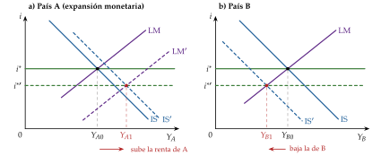
Una expansión fiscal en A (gráfico 2):
paso 1: el gasto de A desplaza su IS a la derecha (IS\('\));
paso 2: el tipo de interés de A sube, entra capital y la moneda de A se aprecia: bajan sus exportaciones netas y la IS vuelve en parte a la izquierda (IS\(''\));
paso 3: como A es grande, el tipo de interés mundial sube, aunque menos de lo que subiría el de A si fuera una economía cerrada, porque el gasto de A se reparte en un mercado de capitales mundial;
paso 4: en B, las 2 fuerzas van en el mismo sentido: A le compra más importaciones y la moneda de B se deprecia y gana competitividad. La IS de B se desplaza a la derecha;
paso 5: la renta de A sube, aunque menos que en una economía cerrada, porque la apreciación resta exportaciones netas. En B, con la misma oferta monetaria y un tipo de interés más alto, su LM es compatible con una renta mayor: la renta de B sube. Es el efecto locomotora.
Siguiendo con el ejemplo, un estímulo fiscal en la zona del euro tira de la renta de Estados Unidos.
Los demás escenarios (país pequeño, movilidad imperfecta o nula, tipo fijo con 2 países grandes y el tamaño del país) se ven paso a paso en el anexo A.
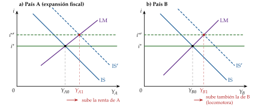
El modelo de 2 países en 4 ecuaciones (tipo flexible, movilidad perfecta, \(P=P^*=1\); \(q\) el tipo de cambio real de A, \(m\) la propensión a importar, \(\nu\) la sensibilidad del saldo comercial a \(q\)): \[\begin{aligned} \text{IS}_A&:\ Y_A=\frac{\overline{A}_A-b\,i+m\,Y_B+\nu\,q}{1-c\,(1-t)+m}, &\qquad \text{LM}_A&:\ M_A=k\,Y_A-h\,i,\\ \text{IS}_B&:\ Y_B=\frac{\overline{A}_B-b\,i+m\,Y_A-\nu\,q}{1-c\,(1-t)+m}, &\qquad \text{LM}_B&:\ M_B=k\,Y_B-h\,i, \end{aligned}\] con 4 incógnitas: \(Y_A\), \(Y_B\), \(i\) y \(q\). Las exportaciones de A son las importaciones de B.
Sumando las 2 IS y las 2 LM sale un IS-LM del mundo, que fija la renta mundial, \(Y_A+Y_B\), y el tipo de interés mundial, \(i\).
Con el tipo mundial ya fijado, cada LM da la renta de su país: \(Y_B=(M_B+h\,i)/k\).
Si A expande el dinero, baja \(i\) y, con \(M_B\) igual, baja \(Y_B\): el empobrecimiento del vecino sale sin ambigüedad.
Si A expande el gasto, sube \(i\) y sube \(Y_B\): la locomotora. Si las 2 LM son iguales, la renta de B sube tanto como la de A, \(\Delta Y_A=\Delta Y_B=(h/k)\,\Delta i\).
Con tipo fijo, \(q\) es dato y el dinero de cada país se ajusta con las reservas. Restando las 2 IS, la diferencia \(Y_A-Y_B\) solo depende de \(\overline{A}_A-\overline{A}_B\) y de \(q\):
la expansión monetaria baja \(i\) y sube las 2 rentas por igual;
la fiscal sube la renta mundial y el tipo \(i\), y aumenta \(Y_A-Y_B\): en B, el efecto depende de si pesa más la demanda de A o la subida del tipo de interés.
iii) Implicaciones
El signo del desbordamiento depende de la política (tabla 1): con tipo flexible, la expansión fiscal es locomotora y la monetaria empobrece al vecino.
Para la coordinación:
la política monetaria con tipo flexible es un juego de suma negativa: cada uno quiere depreciar, y si todos lo hacen nadie gana;
la fiscal es un juego de bienes públicos: cada uno quiere que tire el otro, y nadie tira;
las 2 son dilemas del prisionero, y a ellos se vuelve en la deseabilidad (I.2).
| Régimen | Política en A | Renta de A | Renta de B |
|---|---|---|---|
| Tipo flexible | Monetaria | Sube; más cuanto menor es A | Baja en el caso canónico (domina la apreciación de B) |
| Fiscal | Sube; más cuanto mayor es A | Sube (efecto locomotora) | |
| Tipo fijo | Monetaria | Sube | Sube (sube la oferta monetaria mundial) |
| Fiscal | Sube | Ambiguo (más demanda de A frente a un tipo de interés mundial más alto) |
Fuente: elaboración propia a partir de Mundell (1963) y Mundell (1964).
c) Extensiones
El tamaño de A frente a B:
cuanto más pequeño es A, más se parece al país pequeño de Mundell-Fleming: su política monetaria gana eficacia, porque el tipo mundial apenas se mueve y toda la expansión actúa por la depreciación, y su política fiscal la pierde;
cuanto más grande es A, más se parece a una economía cerrada: su política fiscal recupera eficacia, para A y para B, porque A arrastra el tipo mundial; la monetaria la pierde.
Con tipo de cambio fijo (y movilidad perfecta), el mundo es un solo mercado de dinero y la política de A se reparte entre los 2:
una expansión monetaria en A baja el tipo de interés mundial; A pierde reservas, que gana B, y la renta sube en los 2 países;
una expansión fiscal en A sube su renta y el tipo mundial; en B, el mayor gasto de A tira de sus exportaciones, pero el tipo de interés más alto frena su inversión: el efecto sobre B es ambiguo.
Con movilidad imperfecta, las 2 fuerzas que actúan sobre B pierden potencia, pero las conclusiones no cambian en lo sustancial.
d) Evidencia empírica
La evidencia contradice el signo de la política monetaria:
con tipos flexibles, una expansión de la Reserva Federal sube la producción del resto del G-7, sobre todo porque baja el tipo de interés real mundial, y la balanza comercial pesa poco;
una subida de sus tipos baja la producción en casi todos los países, también en los que flotan;
tras 2008, la expansión de los países avanzados empujó capital hacia los emergentes, y el movimiento se invirtió cuando la Reserva Federal empezó a subir tipos, en diciembre de 2015, y a reducir su balance, en octubre de 2017.
Para explicarlo hacen falta canales que Mundell-Fleming no tiene: los precios relativos, que añade el modelo siguiente, y el canal financiero.
e) Valoración
Ventajas: muestra con sencillez los canales de la interdependencia y por qué el signo del desbordamiento depende de la política y del régimen.
Inconvenientes:
es estático, con precios fijos y sin microfundamentos: no dice nada del bienestar, solo de la renta, y está expuesto a la crítica de Lucas (1976)5 [ver tema 3.A.6];
las políticas son exógenas: no tiene en cuenta cómo responde cada país a la política del otro, que es justo lo que estudia la teoría de juegos (I.2);
no dice si coordinar compensa: solo que hay desbordamientos.
Las 2 primeras críticas las responde la nueva macroeconomía abierta, con Corsetti y Pesenti.
I.1.2. Modelo dinámico con expectativas racionales: Corsetti y Pesenti
a) Idea
La nueva macroeconomía abierta (new open economy macroeconomics, NOEM) nace con el modelo Redux de Obstfeld y Rogoff (1995): modelos de equilibrio general dinámicos con agentes que optimizan, competencia monopolística y rigideces nominales, en 2 países [ver tema 3.A.7] [ver tema 3.B.14]. Son la versión abierta del modelo neokeynesiano con microfundamentos que sistematizó Michael Woodford.6
Son los modelos de trabajo de bancos centrales y organismos, como el SIGMA de la Reserva Federal, el GEM del FMI o los de la Comisión Europea.7 Su versión para una economía pequeña es la de Galí y Monacelli (2005) [ver tema 3.A.32]; aquí interesan los de 2 países.
Corsetti y Pesenti (2009) reducen uno de esos modelos a 3 curvas en el plano del empleo y el consumo, para enseñarlo como el IS-LM. Aporta 2 cosas que Mundell-Fleming no tiene:
un canal nuevo, la relación real de intercambio;
un criterio de bienestar: la utilidad de los hogares, con la que se puede preguntar si coordinar mejora a los 2 países. Por eso son modelos de coordinación con microfundamentos, a diferencia del diagrama de Hamada (I.2.1), que parte de funciones de pérdida postuladas.
El modelo se construye por pasos: primero las piezas y el equilibrio de una economía cerrada, después la economía mundial y, por último, la estabilización de una perturbación con 3 formas de fijar los precios de exportación. El objetivo es ver los efectos desbordamiento en la economía abierta: la economía cerrada solo da las piezas.
b) Modelo
i) Supuestos
2 países, A y B (las variables de B llevan subíndice \(B\), salvo su tono monetario, \(\mu^*\), que entra en el tipo de cambio), cada uno con un hogar representativo que consume y trabaja.
Competencia monopolística entre variedades, con elasticidad de sustitución \(\sigma>1\) [ver tema 3.A.18]; tecnología lineal en el trabajo, con productividad \(Z\).
Sin inversión ni gasto público: lo que se produce se consume. El consumo es una cesta con la mitad de bienes de cada país.
Precios fijados por adelantado un periodo (rigidez nominal) y mercados financieros completos.
Un banco central benevolente, que maximiza la utilidad del hogar de su país, con un instrumento, el tono de la política monetaria, \(\mu\): el gasto nominal que sostiene (aquí \(\mu\) no es el margen).
ii) Desarrollo
Paso 1: las piezas del modelo (gráfico 3). El modelo se resume en 6 ecuaciones: las preferencias del hogar, 3 curvas en el plano \((\ell,C)\), la relación real de intercambio, que une las curvas de los 2 países, y el tipo de cambio. Se presentan una a una.
Las preferencias: la utilidad crece con el consumo y decrece con el trabajo, con \(\chi\) el peso de la desutilidad del trabajo y \(\ell\) el empleo: \[U=\ln C-\chi\,\ell\qquad\Longrightarrow\qquad C=e^{\,U+\chi\ell}\tag{1}\] La segunda expresión es la curva de indiferencia de nivel \(U\): creciente y convexa en el plano \((\ell,C)\), con pendiente \(\chi\,C\). El bienestar sube hacia arriba y a la izquierda: más consumo con menos trabajo.
La demanda agregada: el gasto nominal \(\mu\) dividido por el nivel de precios.
\[\text{AD: }\ C=\frac{\mu}{P}\tag{2}\]
Es horizontal: con precios fijos, el consumo lo fija la política monetaria. Es el rasgo keynesiano del modelo.
La tecnología (los autores la llaman AS, aunque no es la oferta agregada de los manuales): un rayo desde el origen, con pendiente \(Z\,\tau\).
\[\text{AS: }\ C=Z\,\ell\,\tau\tag{3}\]
La relación real de intercambio, \(\tau\): cuánto consumo compra una unidad de lo producido. Con \(P_H\) el precio en A de lo producido en A y \(P^*_H\) su precio en B, en moneda de B, \[\tau\equiv\Big[\frac{P}{2}\Big(\frac{1}{P_H}+\frac{1}{E\,P^*_H}\Big)\Big]^{-1}\tag{4}\] de modo que \(1/\tau\) son las unidades de producción de A que hacen falta para comprar una cesta de consumo de A. Los autores miden la relación de intercambio como el precio de las importaciones sobre el de las exportaciones, \(P_F/(E\,P^*_H)\), con \(P_F\) el precio en A de lo producido en B: cuando sube, la relación de intercambio de A empeora y \(\tau\) baja. Si los bienes de A se abaratan frente a los de B, \(\tau\) baja y la AS gira hacia abajo: para consumir lo mismo hay que trabajar más. En la economía cerrada, \(\tau=1\).
La tasa natural: el empleo con precios flexibles, una vertical.
\[\text{NR: }\ \overline{\ell}=\frac{\sigma-1}{\sigma\,\chi}\tag{5}\]
No depende de la productividad y sí del poder de mercado: cuanto menor es \(\sigma\) (variedades más diferenciadas, mayor margen), menos se trabaja; con competencia perfecta (\(\sigma\to\infty\)) sería el empleo eficiente, \(1/\chi\).
El tipo de cambio: el cociente de los tonos monetarios. Con mercados completos, una política más expansiva en A deprecia su moneda [ver tema 3.B.14].
\[E=\frac{\mu}{\mu^*}\tag{6}\]
El código de colores de los gráficos es el del artículo original: en negro, la situación inicial; en azul, lo exógeno (la productividad, el tono monetario, el poder de mercado); en rojo, lo endógeno, lo que se ajusta (precios, relación de intercambio, consumo y empleo). Los números en círculo siguen el orden de los pasos del texto.
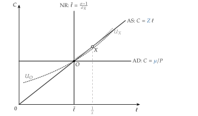
Fuente: elaboración propia a partir de Corsetti y Pesenti (2005). \(\mu\) es aquí el tono de la política monetaria, no el margen.
De dónde sale la NR. Con precios flexibles, cada empresa fija su precio con un margen sobre el coste marginal, \(P=\frac{\sigma}{\sigma-1}\,\frac{W}{Z}\), y el hogar trabaja hasta que el salario real iguala su relación marginal de sustitución, \(\frac{W}{P}=\chi\,C\). Juntando las 2 con \(C=Z\ell\) (economía cerrada): \[\frac{W}{P}=\frac{\sigma-1}{\sigma}\,Z=\chi\,Z\,\ell\qquad\Longrightarrow\qquad \overline{\ell}=\frac{\sigma-1}{\sigma\,\chi}.\] La productividad se cancela: si sube, sube a la vez el salario real y el consumo, y el empleo natural no cambia. El margen \(\frac{\sigma}{\sigma-1}\) es la cuña que separa \(\overline{\ell}\) del empleo eficiente, \(1/\chi\).
Paso 2: el equilibrio de la economía cerrada, en el mismo gráfico 3.
Con precios rígidos, el equilibrio está donde se cortan la AD y la AS, el punto \(O\); la NR marca el empleo al que volvería la economía con precios flexibles. Al principio, los 3 coinciden.
La curva de indiferencia que pasa por \(O\) (\(U_O\)) corta la AS desde arriba: su pendiente, \(\chi C=\frac{\sigma-1}{\sigma}Z\), es menor que la de la AS, \(Z\). Trabajar algo más y consumir lo producido sube el bienestar.
El óptimo está en \(X\), donde una curva de indiferencia (\(U_X\)) es tangente a la AS, con el empleo eficiente \(1/\chi\). La distancia entre \(\overline{\ell}\) y \(1/\chi\) es la distorsión monopolística, que el modelo hereda de Dixit y Stiglitz.8 La política monetaria no puede corregirla: es un problema de oferta, que corrige la competencia (las reformas estructurales de las extensiones).
Un ejemplo en la economía cerrada: una subida de la productividad. Sirve para ver cómo se mueven las curvas y cuál es la política óptima antes de pasar a 2 países (gráfico 4):
(1) \(Z\) sube (azul, exógeno) y la AS gira hacia arriba: con el mismo trabajo se produce más.
(2) Con precios rígidos, ni los precios ni la AD se mueven: se consume lo mismo con menos trabajo y la economía pasa de \(O\) a \(B\), a la izquierda de la NR. Es una brecha de empleo (y de producción) negativa: la productividad sube, pero el empleo cae.
(3) Con precios flexibles, las empresas bajarían sus precios, la AD subiría (\(\mu/P\uparrow\), rojo, endógeno) y la economía llegaría a \(A\), sobre la NR: más consumo con el mismo empleo.
(4) El banco central sube \(\mu\) (azul) y lleva la AD a la misma altura, de \(B\) a \(A\). Replicar el equilibrio con precios flexibles es la política óptima: cierra la brecha sin inflación.
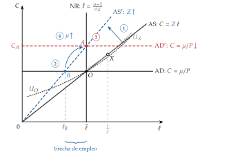
Fuente: elaboración propia a partir de Corsetti y Pesenti (2005). En negro, lo inicial; en azul, lo exógeno; en rojo, lo endógeno.
Paso 3: la economía mundial (gráfico 5). Se juntan 2 economías como la anterior, A y B, y la AS de cada una lleva ya su relación de intercambio, \(\tau\) y \(\tau_B\), que se mueven en sentidos opuestos: lo que se abarata un país se lo ahorra el otro.9
Con precios flexibles, la subida de la productividad en A abarata sus bienes: \(\tau\) baja y \(\tau_B\) sube. A trabaja lo mismo y consume más, aunque menos que si fuera una economía cerrada, y B consume más sin trabajar más: la perturbación se reparte entre los 2 por la relación de intercambio.
Con precios rígidos, nada se mueve fuera de A. El tipo de cambio solo depende de la política monetaria (6), así que no cambian ni los precios ni la AD de nadie: en A, la AS gira hacia arriba y A consume lo mismo con menos trabajo, por debajo de su empleo natural (una brecha de empleo negativa), y B sigue en \(O_B\). Las rigideces nominales aíslan a las economías, con cualquier forma de fijar los precios de exportación.
Lo que lleva la perturbación a B es la respuesta monetaria de A para cerrar su brecha: el desbordamiento depende de la política, no de la perturbación.
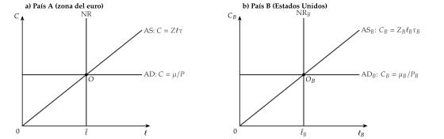
Fuente: elaboración propia a partir de Corsetti y Pesenti (2005).
Paso 4: la estabilización en A y la moneda de los precios. El banco central de A sube \(\mu\) hasta devolver el empleo a su NR: replicar el equilibrio con precios flexibles es la política óptima, porque cierra la brecha sin inflación. Al subir \(\mu\), la moneda de A se deprecia (6). Lo que esa depreciación hace a B depende de en qué moneda fijan sus precios de exportación las empresas, porque eso decide cuánto del movimiento del tipo de cambio pasa a los precios de importación (el traspaso, pass-through) [ver tema 3.A.37]. Hay 3 casos:
en la moneda del productor (producer currency pricing, PCP): traspaso completo;
en la moneda del comprador (local currency pricing, LCP): traspaso nulo a corto plazo;
todos en la moneda de uno de los 2 países, el «dólar» (dollar pricing): traspaso asimétrico.
Escenario 1: traspaso completo, PCP (gráfico 6).
(1) En A sube la productividad y la AS gira hacia arriba; con precios rígidos, se abre la brecha de empleo.
(2) El banco central de A sube \(\mu\) y su moneda se deprecia (\(E=\mu/\mu^*\) sube).
(3) La depreciación pasa entera a los precios: los bienes de A se abaratan en B y los de B se encarecen en A, como en Mundell-Fleming. La relación de intercambio de A empeora (\(\tau\downarrow\)) y su AS gira hacia abajo; como las importaciones se encarecen, \(P\) sube algo y la AD sube menos que \(\mu\). A llega a \(H\), sobre su NR: cierra la brecha.
(4) En B, la relación de intercambio mejora (\(\tau_B\uparrow\)) y su AS gira hacia arriba.
(5) Las importaciones de B se abaratan, su índice de precios baja y su AD sube: B pasa de \(O_B\) a \(H_B\), sobre su NR, con más consumo y el mismo empleo. El desbordamiento es positivo.
El tipo de cambio hace lo que harían los precios si fueran flexibles: la política que cierra la brecha en A reproduce el equilibrio con precios flexibles en los 2 países. Por la misma razón, el tipo de cambio salta de una vez a su nuevo valor, sin sobrerreacción [ver tema 3.B.14].
Frente a Mundell-Fleming, el signo se invierte: allí la expansión monetaria empobrece al vecino porque le quita demanda; aquí le beneficia porque le abarata lo que compra. El canal es la relación real de intercambio, no las exportaciones netas.
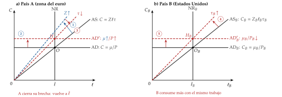
Fuente: elaboración propia a partir de Corsetti y Pesenti (2005). En negro, lo inicial; en azul, lo exógeno; en rojo, lo endógeno.
Escenario 2: traspaso nulo, LCP (gráfico 7). Cada empresa fija en la moneda del comprador el precio de lo que vende en cada país, de modo que a corto plazo todos los precios de consumo del mundo están fijos, se mueva como se mueva el tipo de cambio.
(1) En A sube la productividad, como antes.
(2) El banco central de A sube \(\mu\); como no hay inflación importada, la AD sube tanto como \(\mu\): A consume más que con PCP.
(3) La depreciación no abarata los bienes de A en B ni los encarece en A: lo que cambia son los márgenes. El exportador de A cobra en B el mismo precio en moneda de B, que ahora vale más en moneda de A: la relación de intercambio de A mejora (\(\tau\uparrow\)) y A llega a \(L\), sobre su NR.
(4) En B, justo al revés que con PCP: su relación de intercambio empeora (\(\tau_B\downarrow\)) y la AS gira hacia abajo, mientras la AD no se mueve (sus precios de consumo están fijos en su moneda). B pasa de \(O_B\) a \(L_B\), con el mismo consumo y más trabajo, fuera de su empleo natural. Su bienestar baja: la expansión de A empobrece al vecino.
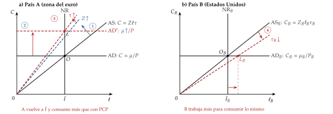
Fuente: elaboración propia a partir de Corsetti y Pesenti (2005). En negro, lo inicial; en azul, lo exógeno; en rojo, lo endógeno.
Por qué importa el caso LCP:
añade una rigidez nominal más, la de los precios de importación, que se suma a la de los precios internos;
tiene respaldo empírico: a corto plazo, los precios de importación apenas responden al tipo de cambio, sobre todo cuando el comercio se factura en dólares, que es lo más frecuente [ver tema 3.A.37].
Sus consecuencias para los desbordamientos:
un movimiento del tipo de cambio del mismo tamaño que con PCP apenas cambia el comercio a corto plazo, porque no hay desvío del gasto (expenditure switching) entre países: lo que se desvía, dicen los autores, es la carga de trabajo necesaria para sostener el consumo mundial;
como los precios de consumo no absorben la expansión monetaria, el tipo de cambio tiene que moverse más que con PCP para equilibrar el mercado de dinero: con fijación de precios por mercados (pricing to market) vuelve la sobrerreacción del tipo de cambio de Dornbusch [ver tema 3.B.14];
la política monetaria pasa de locomotora a empobrecimiento del vecino: los desbordamientos dependen de cómo se fijan los precios.
Escenario 3: facturación en dólares. Todo el comercio se factura en la moneda de uno de los 2 países, el «dólar» (en el ejemplo, la de Estados Unidos, B), no en una tercera moneda. Cuando el emisor cambia su política, sus precios de importación no se mueven y se comporta como una economía cerrada, mientras el otro país recibe todo su efecto: consume como con PCP, pero trabaja más. El desbordamiento es positivo en el consumo y negativo en el trabajo, y su signo podría ser ambiguo; como la curva de indiferencia de partida corta la AS desde arriba, por la distorsión monopolística, domina el consumo y, en conjunto, es positivo. Es la versión de 2 países del paradigma de la moneda dominante; los gráficos, paso a paso, están en el anexo B.
iii) Implicaciones
¿Hay ganancias de coordinar? Los autores comparan la política óptima de cada banco central por su cuenta (el equilibrio de Nash) con la que elegirían juntos, maximizando la media de los 2 bienestares. La respuesta cambia con cada escenario:
con PCP, ninguna: la política óptima mira solo hacia dentro (cerrar la brecha propia) y el tipo de cambio hace el resto. Es la versión extrema del argumento de M. Friedman (1953): aun con precios rígidos, el tipo de cambio da los precios relativos correctos;
con LCP, tampoco, aunque haya desbordamientos: cada banco central estabiliza una media de los costes de las empresas de los 2 países, para no hacer variar los márgenes de los exportadores, y los 2 eligen la misma política, de modo que el tipo de cambio no se mueve. El efecto de empobrecer al vecino existe, pero ningún banco central lo busca, y lo que se ganaría coordinando, un tipo de cambio estable, ya se consigue sin coordinar;
con facturación en dólares, sí: el bienestar mundial sube si se coordina, pero solo tiene que cambiar su política el país que emite el dólar. La contribución a la cooperación es unilateral, y cabe preguntarse qué incentivo tiene ese país a firmar un acuerdo.
En los 2 primeros casos, «poner orden en la propia casa» es la mejor regla. El tercero, que es el que más se parece a un mundo que factura en dólares, deja abierta la puerta.
Es la distinción del título del apartado: con LCP hay efectos desbordamiento (B queda en \(L_B\), fuera de su empleo natural), pero no basta para que coordinar mejore el resultado. La condición suficiente es otra (I.2).
c) Extensiones
Una reforma estructural en A que reduce el poder de mercado de sus empresas sube \(\sigma\) (variedades más sustituibles, menor margen) y, con él, el empleo natural de A (5):
A produce más, sus bienes se abaratan y su relación de intercambio empeora (\(\tau\downarrow\)), mientras la de B mejora (\(\tau_B\uparrow\));
A trabaja y consume más, aunque el empeoramiento de la relación de intercambio le quita parte de la ganancia; B consume más con el mismo trabajo;
es un desbordamiento positivo de una política de oferta: las reformas que reducen las distorsiones de un país benefician también a sus socios. El gráfico, paso a paso, está en el anexo B.
El reparto del riesgo: si una caída de la productividad golpea solo a A y los mercados no permiten asegurarse, la política podría hacer de seguro. Una contracción monetaria en A, por ejemplo, aprecia su moneda, encarece sus exportaciones y le transfiere renta desde B. En manos de un país solo, es la tentación de empobrecer al vecino; en manos de un coordinador, una forma de repartir el golpe [ver tema 3.B.12].
El problema es que una política con un solo instrumento no puede corregir a la vez 2 distorsiones, la rigidez de precios y la falta de seguro: lo que pide una no tiene por qué ser lo que pide la otra.
La integración reduce este motivo: con más comercio, la relación de intercambio ya reparte el golpe (los bienes de A, más escasos, se encarecen), y con más mercados financieros, los hogares se aseguran solos. Paradójicamente, la globalización puede pedir menos coordinación, no más.
Los bienes intermedios importados y las cadenas globales de valor: si lo que se importa entra en la producción propia, el tipo de cambio afecta a los costes y los desbordamientos son mayores, sobre todo en las economías pequeñas que ensamblan para exportar [ver tema 3.B.18].
Los bienes no comerciables: si las perturbaciones golpean de forma distinta a los sectores de bienes comerciables y no comerciables, el tipo de cambio no basta para ajustar los precios relativos, y la política óptima ya no es mirar solo hacia dentro.
d) Evidencia empírica
Cómo se fijan los precios es una cuestión empírica, y la respuesta ha cambiado: el traspaso a los precios de importación es bajo a corto plazo y la mayor parte del comercio se factura en dólares, no en la moneda del exportador ni en la del comprador. El mundo se parece más al caso del dólar que a los otros 2.
Cuánto se gana coordinando: en los modelos de la NOEM, poco; con bienes intermedios importados y no comerciables, la ganancia puede llegar a ser apreciable para algunos países, hasta el 2,2 % del consumo en algún caso.
e) Valoración
Ventajas: microfundamentos, un criterio de bienestar y un canal nuevo, la relación de intercambio, en un gráfico de 3 curvas.
Limitaciones: los resultados dependen de supuestos difíciles de contrastar (en qué moneda se fijan los precios, qué activos hay, preferencias logarítmicas que hacen coincidir Nash y cooperación); con preferencias más generales, la política de cada uno y la cooperativa ya no coinciden.
Y no explica lo que se ve en la práctica: los gobiernos coordinan poco aunque haya desbordamientos. Para eso hay que pasar de los efectos a las decisiones.
Los 2 modelos, frente a frente (figura 1): comparten la rigidez nominal y los 2 países grandes, y en los 2 el signo del desbordamiento depende de un supuesto; difieren en los microfundamentos, el canal exterior y el criterio con que se juzga el resultado.
El artículo completo, con todos los casos y sus gráficos, está en la versión de trabajo del NBER y en la del Banco de la Reserva Federal de Nueva York (Staff Report 209, 2005), que trae un gráfico para cada ejercicio de estática comparativa; la versión publicada es la de Corsetti y Pesenti (2009).
Los 2 modelos, frente a frente (para consultar; no se canta). Los supuestos, el desarrollo, las implicaciones y la valoración de cada modelo, bloque a bloque, y lo que tienen en común.
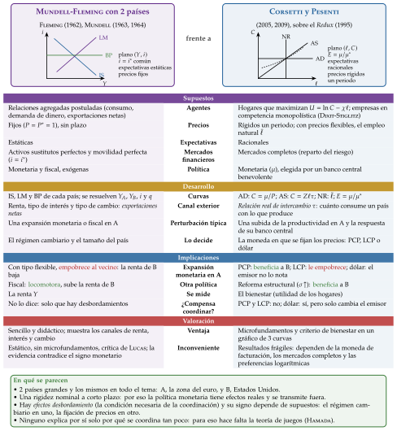
Recapitulando la primera condición: la política de un país grande desborda sus fronteras, pero el signo depende del modelo y de cómo se fijan los precios, y que haya desbordamientos no garantiza que coordinar mejore el resultado. Esto nos lleva a la segunda condición.
I.2. Deseabilidad: las ganancias como condición suficiente. La teoría de juegos
Una vez vistos los desbordamientos, la condición necesaria, pasamos a la suficiente: que coordinar dé a todos un resultado mejor que actuar cada uno por su cuenta.
Los modelos de coordinación usan la teoría de juegos, porque estudian decisiones con interdependencia estratégica: lo que gana cada gobierno depende de lo que haga el otro, y los 2 lo saben [ver tema 3.A.14].
Casi todos son variantes del dilema del prisionero: si los 2 países cooperan, están mejor que si no lo hacen, pero no cooperar es la mejor respuesta de cada uno a lo que haga el otro.
I.2.1. Hamada y Corden
a) Idea
Hamada (1976) llevó la teoría de juegos a la política monetaria entre 2 países con un diagrama que todavía se usa10; Corden (1994) lo expone con el tipo de cambio como objetivo, a partir del trabajo empírico de Oudiz y Sachs (1984), y esa es la versión que contamos: el diagrama de Hamada en el modelo de Corden.
Permite ver en un solo gráfico por qué el equilibrio sin coordinar es ineficiente y por qué la solución cooperativa es frágil.
Es el problema de «¿quién le pone el cascabel al gato?»: los 2 países saben lo que les conviene a ambos, pero cada uno espera a que se mueva el otro, porque el que se mueve solo carga con el coste.
b) Modelo
i) Supuestos
2 países, A y B, cada uno con un instrumento, su oferta monetaria, \(M_A\) y \(M_B\).
Cada país tiene una disyuntiva entre inflación, \(\pi_i\), y paro, \(U_i\) (la curva de Phillips) [ver tema 3.A.28], y una pérdida con la forma de la de Barro y Gordon [ver tema 3.A.36]; B es más contrario a la inflación que A (\(\gamma_B>\gamma_A\)).
El tipo de cambio lo fija el dinero relativo, como en el modelo monetario [ver tema 3.B.14]: \(E=f(M_A/M_B)\), con \(f'>0\). Una expansión relativa de A deprecia su moneda, lo que le sube la inflación (las importaciones son más caras) y le baja el paro (exporta más).
Se cumple la paridad no cubierta de intereses: los tipos de interés de los 2 países difieren en la depreciación esperada [ver tema 3.B.13].
Los 2 países comparten un objetivo de tipo de cambio, \(E_0\): el tipo de cambio compatible con los objetivos internos de cada uno es el mismo.
El juego es estático y se juega una vez.
ii) Desarrollo
La pérdida de cada país, \(i\in\{A,B\}\), crece con la distancia del paro y de la inflación a sus objetivos, \(U^*_i\) y \(\pi^*_i\), con un peso \(\gamma_i\) para la inflación:
\[L_i=(U_i-U^*_i)^2+\gamma_i\,(\pi_i-\pi^*_i)^2,\qquad i\in\{A,B\}\tag{7}\]
El problema de cada país, por ejemplo A, toma como dada la política de B: \[\begin{array}{rl}\displaystyle \min_{M_A} & \displaystyle L_A=(U_A-U^*_A)^2+\gamma_A(\pi_A-\pi^*_A)^2 \\ \text{s.a.} & \pi_A=\pi_A(\underset{+}{E},\underset{+}{M_A}) \\ & U_A=U_A(\underset{-}{E},\underset{-}{M_A}) \\ & E=f(M_A/M_B)\end{array}\]
la primera restricción dice que la depreciación y la expansión monetaria suben la inflación; la segunda, que bajan el paro;
su solución, para cada \(M_B\), es la función de reacción de A, \(M_A=R_A(M_B)\); la de B es \(M_B=R_B(M_A)\).
El gráfico (gráfico 8), con \(M_A\) en el eje horizontal y \(M_B\) en el vertical:
cada rayo desde el origen es un tipo de cambio, y su ángulo con el eje horizontal (marcado en el origen) lo mide: cuanto más inclinado, mayor \(M_B\) frente a \(M_A\) y más apreciada la moneda de A;
cada país tiene un punto de felicidad, el de pérdida nula, en el que alcanza a la vez sus objetivos de paro y de inflación: \(F_A\) para A, más lejos del origen porque A prefiere una política más laxa en los 2 países, y \(F_B\) para B. Los 2 están en el rayo \(E_0\);
las curvas de indiferencia de cada país son círculos alrededor de su punto de felicidad, peores cuanto más lejos;
con curvas circulares, la función de reacción de A es la vertical que pasa por \(F_A\): haga lo que haga B, a A le conviene el mismo \(M_A\), el que le deja en el círculo más cercano a \(F_A\). La de B es la horizontal que pasa por \(F_B\). En el gráfico salen como flechas desde cada punto de felicidad: cada país parte de su óptimo y se mueve solo con su instrumento.
El equilibrio no cooperativo es el corte de las 2 funciones de reacción, el punto \(N\): un equilibrio de Nash, porque cada país hace lo mejor que puede dado lo que hace el otro [ver tema 3.A.14].
No es un óptimo de Pareto: por \(N\) pasan una curva de indiferencia de cada país que forman una lente, y en cualquier punto de la lente los 2 están mejor.
En \(N\), el tipo de cambio \(E_N\) deja la moneda de A demasiado depreciada para los 2.
La solución cooperativa: los 2 países eligen juntos sus políticas para minimizar una media de sus pérdidas, \(\omega\,L_A+(1-\omega)\,L_B\), con un peso \(\omega\in(0,1)\) que refleja el poder negociador de A.
Sus soluciones, al variar \(\omega\), son los puntos de tangencia de las curvas de indiferencia: la curva de contrato, que con círculos es el segmento que une \(F_A\) y \(F_B\).
La parte de la curva de contrato que queda dentro de la lente es el núcleo: los acuerdos que mejoran a los 2 frente a \(N\). El punto concreto depende del poder negociador.
Como los 2 puntos de felicidad están en el mismo rayo, todo el núcleo está sobre \(E_0\): el tipo de cambio cooperativo es el objetivo común.
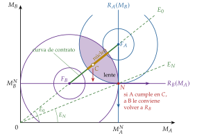
iii) Implicaciones
Con desbordamientos, actuar cada uno por su cuenta es ineficiente, y coordinar mejora a los 2: es el argumento teórico de la coordinación.
Pero la solución cooperativa no es un equilibrio de Nash: si A se compromete con su parte del acuerdo, en el punto \(C\) del núcleo, a B le conviene bajar su oferta monetaria hasta su función de reacción, que le acerca a \(F_B\) (la flecha roja del gráfico). Cada país tiene incentivos a comportarse como un polizón (free rider).
Es un dilema del prisionero en versión continua: con curvas circulares, cada país tiene incluso una estrategia dominante, como en el dilema.
Que coordinar sea mejor no basta: hace falta que la cooperación se sostenga.
c) Extensiones
Si uno de los 2 decide primero, a la Stackelberg [ver tema 3.A.19], el líder elige el punto de la función de reacción del otro que más le conviene. Con curvas circulares, el punto de la horizontal de B más cercano a \(F_A\) es \(N\): el liderazgo no cambia nada. Con curvas elípticas, las funciones de reacción tienen pendiente, el liderazgo sí cambia el resultado y el núcleo sigue siendo la parte de la curva de contrato dentro de la lente.
Si el juego se repite, la cooperación puede sostenerse sin contrato (I.2.2).
d) Evidencia empírica
Oudiz y Sachs (1984) cuantificaron por primera vez un juego de este tipo, con modelos econométricos keynesianos de Estados Unidos, Alemania y Japón. La ganancia de coordinar fue modesta: para Estados Unidos, el equivalente a medio punto del PNB al año, algo parecido para Alemania y algo más para Japón.
La razón es el poco comercio: en 1982 las exportaciones de mercancías de Estados Unidos a la Comunidad Europea eran solo el 1,6 % de su PNB.
Los repasos posteriores de la evidencia llegaron a la misma conclusión: las ganancias de coordinar son pequeñas.
e) Valoración
Ventajas: muestra en un gráfico la diferencia entre el equilibrio de Nash y el óptimo de Pareto, y por qué la solución cooperativa es frágil.
Limitaciones:
las curvas circulares y el objetivo común de tipo de cambio son supuestos muy simplificadores;
coordinar solo a los bancos centrales puede ser contraproducente si no tienen credibilidad frente al sector privado; el argumento se desarrolla con los obstáculos (I.3.1);
las ganancias medidas son pequeñas: Blanchard, Ostry y Ghosh (2013) llamaron a la coordinación «el monstruo del lago Ness», de la que se habla mucho más de lo que se la ve.
I.2.2. Juegos repetidos: cómo se obtiene la cooperación
a) Idea
En el diagrama de Hamada, la solución cooperativa no se sostiene si el juego se juega una vez. Pero los gobiernos no se ven una sola vez: coinciden en todas las cumbres.
Si el juego se repite, la amenaza de dejar de cooperar en el futuro puede sostener hoy la cooperación sin necesidad de un contrato.
b) Modelo
i) Supuestos
El juego de la locomotora: ante una recesión mundial, la zona del euro (A) y Estados Unidos (B) deciden si expandir el gasto o no, con los mismos pagos que la guerra de precios del dilema del prisionero [ver tema 3.A.14] (tabla 2):
si los 2 expanden, la economía mundial sale de la recesión y nadie empeora su balanza comercial: 5 cada uno;
si expande uno solo, paga la locomotora de otro: el que expande se queda con el déficit y la deuda (0) y el otro se lleva el tirón sin pagarlo (6);
si no expande ninguno, la recesión sigue: 1 cada uno.
El juego se repite sin un final conocido, y cada gobierno descuenta los pagos futuros con un factor \(\beta\in(0,1)\).
Cada gobierno sigue la estrategia del gatillo de James W. Friedman (1971): coopera mientras el otro coopere y, si el otro se desvía una vez, deja de cooperar para siempre.
| Expandir | No expandir | |
| Expandir | \((5,5)\) | \((0,\underline{6})\) |
| No expandir | \((\underline{6},0)\) | \((\underline{1},\underline{1})\) |
Fuente: elaboración propia a partir de J. Frankel (2016), con los pagos del dilema del prisionero de la guerra de precios. Subrayadas, las mejores respuestas; sombreado, el equilibrio de Nash.
ii) Desarrollo
Si el juego se jugara una vez, no expandir sería una estrategia dominante y (No expandir, No expandir) el único equilibrio de Nash, con 1 cada uno.
En el juego repetido, cada gobierno compara lo que gana desviándose hoy con lo que pierde si el otro deja de cooperar para siempre. Con \(u^{\mathrm C}\) el pago por periodo de cooperar, \(u^{\mathrm D}\) el de desviarse y \(u^{\mathrm N}\) el del equilibrio de Nash que sirve de castigo, cooperar es un equilibrio si los gobiernos son lo bastante pacientes:
\[\beta\;\geq\;\frac{u^{\mathrm{D}}-u^{\mathrm{C}}}{u^{\mathrm{D}}-u^{\mathrm{N}}}\tag{8}\]
el numerador es lo que se gana hoy desviándose; el denominador, lo que se pierde cada periodo después;
volvamos a la locomotora: desviarse gana \(6-5=1\) hoy y pierde \(5-1=4\) cada periodo después; cooperar compensa si \(\beta\geq1/5\).
iii) Implicaciones
La cooperación puede sostenerse sin contrato: es la lógica del teorema de tradición oral (folk theorem) [ver tema 3.A.14] y de la colusión tácita entre empresas [ver tema 3.A.19].
Qué es aquí el factor de descuento: la paciencia de los gobiernos, que depende del horizonte electoral, de la probabilidad de que el juego siga y de lo que pese la reputación. Los gobiernos que se ven en todas las cumbres tienen motivos para cooperar sin contrato; los que esperan perder las elecciones, menos.
c) Valoración
Por qué no basta:
las cumbres son pocas y los gobiernos cambian, de modo que \(\beta\) es bajo;
las perturbaciones y los cambios de condiciones hacen difícil saber si el otro ha cumplido o ha tenido mala suerte;
el castigo, dejar de cooperar con un socio grande, es poco creíble.
Por eso la cooperación tácita es frágil y pide reglas e instituciones que la vigilen (I.3.2).
Recapitulando la segunda condición: el equilibrio sin coordinar es ineficiente, pero la solución cooperativa no se sostiene sola, la repetición solo la sostiene con gobiernos pacientes y las ganancias medidas son pequeñas. Queda ver qué más frena la coordinación, qué formas puede tomar y qué hace falta para conseguirla.
I.3. Obstáculos, formas de coordinación y por qué hacen falta foros
Si hay desbordamientos y coordinar compensa, ¿por qué se ve tan poco? El último paso de la teoría reúne 3 piezas, en este orden:
los obstáculos, económicos y políticos, que explican por qué se coordina poco;
las formas que puede tomar la coordinación cuando, pese a todo, se intenta;
la conclusión de la teoría de juegos: hacen falta foros que cambien las reglas del juego.
I.3.1. Obstáculos a la coordinación
Si coordinar es bueno para todos, ¿por qué se ve tan poco? Porque tiene costes, económicos y políticos.
Obstáculos económicos:
el polizón: la solución cooperativa no es un equilibrio (I.2.1). Se resuelve con la repetición del juego (I.2.2) o con un organismo que sancione, como el Órgano de Solución de Diferencias de la OMC [ver tema 3.B.33];
la coordinación puede ser contraproducente: si los bancos centrales expanden a la vez, ninguna moneda se deprecia, y desaparece un freno a la tentación de sorprender con inflación. Los agentes lo anticipan y la inflación de equilibrio sube: coordinar solo a los bancos centrales, sin credibilidad frente al sector privado, puede empeorar a todos [ver tema 3.A.36];
la incertidumbre: sobre la situación de partida, sobre los objetivos y, sobre todo, sobre el modelo. Si los gobiernos no coinciden en cómo funciona la economía, coordinar con el modelo equivocado puede empeorar tanto como mejorar. Es lo que pasó con la locomotora y la disciplina tras 2010 (III.2);
las preferencias distintas: un gobierno da más peso al paro y otro a la inflación (los \(\gamma_i\) de (7)), y no hay un acuerdo que convenga igual a los 2;
el reparto: si las ganancias son desiguales, pueden hacer falta compensaciones.
Obstáculos políticos:
la soberanía: los gobiernos no quieren ceder sus instrumentos, aunque la interdependencia ya les quita autonomía;
los países no son jugadores únicos: cada gobierno negocia a la vez fuera y dentro, con sus parlamentos e intereses (exportadores frente a sectores protegidos, acreedores frente a deudores), y los bancos centrales tienen mandatos nacionales;
la economía política añade también un argumento a favor: una moneda muy depreciada por la política de un país alimenta el proteccionismo en sus socios, un coste que no recoge ningún modelo de bienestar y que justifica al menos vigilar los desalineamientos.
I.3.2. Formas de la coordinación
Si, pese a los obstáculos, los países deciden coordinar, tienen que elegir cómo.
Reglas o acuerdos:
las reglas fijan de antemano qué hace cada uno: el patrón oro, las paridades de Bretton Woods, el Sistema Monetario Europeo [ver tema 3.B.43] o las reglas fiscales de la Unión. Reducen los costes de negociar, la incertidumbre y la inconsistencia temporal, pero necesitan sanciones creíbles y pierden flexibilidad ante perturbaciones grandes, como mostró la cláusula general de escape del Pacto de Estabilidad en 2020 [ver tema 3.B.45];
los acuerdos puntuales responden a una situación: el Plaza y el Louvre, el estímulo de Londres de 2009. Son flexibles, pero duran lo que dura el interés de cada uno.
Con líder o entre iguales: un sistema con un país hegemónico, como Estados Unidos en Bretton Woods, facilita el acuerdo, porque el líder impone sus preferencias; por la misma razón, el resultado puede servir más al líder que al conjunto.
Reglas y acuerdos necesitan, en cualquier caso, un lugar donde negociarse y vigilarse. Esto nos lleva a la última pieza: por qué hacen falta foros.
I.3.3. La problemática de teoría de juegos: por qué hacen falta foros
El punto de partida: la cooperación no se sostiene sola si el juego se juega una vez (I.2.1), y en el juego repetido solo si los gobiernos son pacientes y se pueden vigilar (8).
Lo que hace un foro:
repite el juego: las cumbres anuales y las reuniones de ministros convierten una partida suelta en una relación que no termina, y suben el factor de descuento;
da información: los informes y la evaluación por pares reducen la incertidumbre sobre la situación y sobre el modelo;
hace visibles los incumplimientos: con compromisos públicos y su seguimiento, desviarse se ve y se paga en reputación;
liga asuntos: lo que un país cede en un tema lo gana en otro.
El diseño de un foro: 3 decisiones, cada una con ventajas e inconvenientes.
Amplitud, cuántos asuntos entran en la negociación: más asuntos encarecen la negociación, pero abren compensaciones entre ellos. En la OMC es más fácil cerrar la agricultura si a la vez se negocian los productos industriales [ver tema 3.B.33].
Profundidad, con qué detalle se concreta cada compromiso: más detalle encarece la negociación, pero abarata la vigilancia, reduce los conflictos posteriores y da credibilidad; si el detalle es mucho, conviene prever cláusulas de flexibilidad, como la del Pacto de Estabilidad.
Tamaño: un grupo pequeño negocia más barato (el G-7); uno grande internaliza más desbordamientos (el G-20 desde 2008). Los acuerdos con muchos miembros tienden a pedir poco [ver tema 3.B.31].
Los clubes: un acuerdo se sostiene mejor si la ventaja de estar dentro es excluible. Es la propuesta de Nordhaus (2015)11 para el clima: un club que castiga con un arancel a quien no participa [ver tema 3.B.31].
La escalera de la cooperación (figura 2) coloca cada foro en su peldaño: el intercambio de información (OCDE, FMI), la coordinación puntual (G-7, G-20) y las reglas permanentes (OMC, Unión Europea).
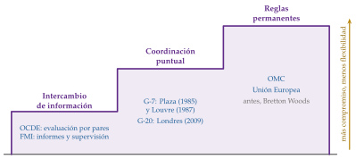
Recapitulando el apartado: hay desbordamientos, aunque su signo depende del modelo (condición necesaria); el equilibrio sin coordinar es ineficiente, pero la cooperación no se sostiene sola y las ganancias medidas son pequeñas (condición suficiente); y los obstáculos económicos y políticos explican por qué se coordina poco. Los foros cambian el juego: pasamos a ver cuáles son y qué hacen.
II. Aspectos prácticos (1): el G-20, la OCDE y otros foros internacionales
Una vez vista la teoría, pasamos a la práctica: los foros en los que gobiernos soberanos cooperan.
Conclusión anticipada:
un foro cambia el juego: lo repite, da información y hace visibles los incumplimientos;
el G-20 es el foro de las crisis y de la coordinación de la demanda; la OCDE, el de las normas y la coordinación de la oferta; el resto (G-7, FMI, Consejo de Estabilidad Financiera, OMC, Unión Europea, Davos, ASEM) sube distintos peldaños de la escalera de la cooperación, o se queda en el diálogo.
Cada foro se cuenta con la misma plantilla: qué es, origen, miembros, cómo funciona, qué coordina y sus límites.
II.1. El G-20
Qué es: el foro principal de la cooperación económica internacional, así designado por sus líderes en Pittsburgh en 2009. Es informal: no tiene tratado, ni secretaría permanente, ni decisiones vinculantes, y decide por consenso. Lo resume la figura 3.
Origen:
nació en 1999, tras la crisis asiática, como reunión de ministros de Finanzas y gobernadores de bancos centrales, para dar voz a las economías emergentes que el G-7 dejaba fuera; su primera reunión fue en Berlín, en diciembre de 1999;
en noviembre de 2008, en Washington, celebró su primera cumbre de jefes de Estado y de Gobierno, y en Londres, en abril de 2009, sustituyó de hecho al G-7 en la gestión de la crisis.
Miembros: son 21, 19 países y 2 organizaciones regionales. Una forma de recordarlos es partir del antiguo G-8 (el G-7 más Rusia) y añadir 11 países, la Unión Europea y la Unión Africana. Por continentes:
América (5): Estados Unidos y Canadá, del G-7, más México, Brasil y Argentina;
Europa (5): Alemania, Francia, Italia y el Reino Unido, del G-7, más Rusia;
Asia y Oriente Medio (7): Japón, del G-7, más China, India, Indonesia, Corea del Sur, Arabia Saudí y Turquía;
África (1): Sudáfrica;
Oceanía (1): Australia;
las 2 organizaciones: la Unión Europea, desde el principio, y la Unión Africana, desde la cumbre de Nueva Delhi de 2023.
Su peso: reúnen en torno al 85 % del PIB mundial, más del 75 % del comercio y 2 tercios de la población. España no es miembro, pero es invitado permanente desde 2008.
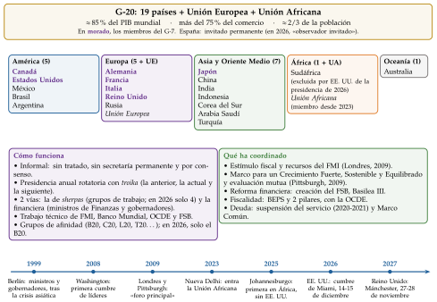
Cómo funciona: sin secretaría, el trabajo lo organiza cada año el país que preside, y la continuidad la dan 3 mecanismos.
La presidencia rotatoria y la troika: la presidencia dura un año y se apoya en la anterior y en la siguiente. Sudáfrica presidió en 2025; Estados Unidos preside del 1 de diciembre de 2025 al 30 de noviembre de 2026, con la cumbre de líderes en Miami (Doral) los días 14 y 15 de diciembre de 2026; el Reino Unido presidirá en 2027, con la cumbre en Mánchester los días 27 y 28 de noviembre de 2027, y Corea del Sur, en 2028.
2 vías de trabajo: la de los sherpas, los representantes personales de los líderes, que prepara la cumbre con grupos de trabajo por materias, y la financiera, de ministros de Finanzas y gobernadores de bancos centrales y sus suplentes, que es el origen del grupo.
El apoyo técnico de los organismos: el FMI, el Banco Mundial, la OCDE, el Consejo de Estabilidad Financiera, la OMC y la OIT hacen los análisis y vigilan el cumplimiento. A su alrededor trabajan además los grupos de afinidad, que reúnen a empresas (B20), sindicatos (L20), sociedad civil (C20) o centros de estudio (T20), entre otros.
Qué ha coordinado: sobre todo en las crisis, y en 5 frentes.
La respuesta a la crisis: el estímulo y los recursos del FMI de Londres en 2009 (III.2) y la creación del Consejo de Estabilidad Financiera (II.3.2).
El crecimiento: en Pittsburgh, en 2009, el Marco para un Crecimiento Fuerte, Sostenible y Equilibrado, con un proceso de evaluación mutua en el que el FMI analiza si las políticas de todos, juntas, son coherentes con los objetivos comunes.
La reforma financiera: Basilea III, la resolución de los bancos sistémicos y los derivados extrabursátiles [ver tema 3.B.27].
La fiscalidad internacional: con la OCDE, el proyecto contra la erosión de bases y el traslado de beneficios y el acuerdo de 2 pilares (II.2).
La deuda de los países pobres: con la pandemia, la Iniciativa de Suspensión del Servicio de la Deuda aplazó más de 12.000 millones de dólares de pagos de casi 50 países entre mayo de 2020 y diciembre de 2021, y en noviembre de 2020 nació el Marco Común para reestructurarla, con el Club de París [ver tema 3.B.29].
La presidencia de Estados Unidos en 2026: un G-20 más pequeño y más dividido.
Propuso volver a lo esencial con 3 prioridades: aligerar la regulación, asegurar un suministro de energía asequible y liderar las nuevas tecnologías, como la inteligencia artificial. Redujo los grupos de trabajo de la vía de sherpas a 4, uno por prioridad más uno de comercio.
No invitó al Gobierno de Sudáfrica, que sigue siendo miembro: el G-20 no tiene tratado ni forma de expulsar a nadie.
Las reuniones ministeriales terminaron sin comunicado común, con declaraciones de la presidencia: en la de ministros de Finanzas y gobernadores de Asheville, en septiembre de 2026, China rechazó varios párrafos.
Límites:
sus compromisos no obligan y dependen de que los cumplan los gobiernos: la evaluación mutua no tiene sanción;
con 20 miembros muy distintos, el consenso es difícil fuera de las crisis: la eficacia cae cuando pasa la urgencia, como de Londres (2009) a Toronto (2010);
las tensiones geopolíticas lo han dividido: Estados Unidos no fue a la cumbre de Johannesburgo de 2025, cuya declaración se aprobó sin él, y en 2026 ha excluido a Sudáfrica.
II.2. La OCDE
Qué es: la Organización para la Cooperación y el Desarrollo Económicos, una organización intergubernamental con sede en París en la que sus miembros comparan sus políticas, se examinan unos a otros y fijan normas comunes. Su misión es promover «mejores políticas para una vida mejor», y su forma de coordinar es la presión entre iguales (peer pressure): la evaluación de cada país por los demás. Lo resume la figura 4.
Origen: nace de la reconstrucción europea.
Sucede a la Organización Europea de Cooperación Económica (OECE), creada en 1948 para repartir la ayuda del Plan Marshall. La OECE normalizó los pagos entre países europeos con la Unión Europea de Pagos (1950), a la que siguió el Acuerdo Monetario Europeo cuando las monedas europeas recuperaron la convertibilidad, a finales de 1958 [ver tema 3.B.20]. España entró en 1959, con el Plan de Estabilización.
Con la convertibilidad lograda y Europa dividida entre la Comunidad Económica Europea y la EFTA, la OECE había perdido su razón de ser, y Estados Unidos y Canadá querían participar. El Convenio de París, de 14 de diciembre de 1960, la convirtió en la OCDE: lo firmaron 20 países, los 18 europeos de la OECE más Estados Unidos y Canadá, y entró en vigor el 30 de septiembre de 1961. España es miembro fundador.
Miembros: 38, el último Costa Rica, en 2021. Han entrado en 4 oleadas tras los fundadores:
1964-1973, el resto de economías avanzadas: Japón, Finlandia, Australia y Nueva Zelanda;
1994-2000, tras la caída del Muro y el Tratado de Libre Comercio de América del Norte: México, Chequia, Hungría, Polonia, Corea y Eslovaquia;
2010: Chile, Eslovenia, Israel y Estonia;
2016-2021: Letonia, Lituania, Colombia y Costa Rica.
Por regiones, los 38 son:
Europa (26): los 22 Estados de la Unión Europea que son miembros (todos salvo Bulgaria, Croacia, Chipre, Malta y Rumanía), más Islandia, Noruega, el Reino Unido y Suiza;
América (6): Estados Unidos, Canadá, México, Chile, Colombia y Costa Rica;
Asia-Pacífico (4): Japón, Corea, Australia y Nueva Zelanda;
Turquía e Israel (2).
La Comisión Europea participa en todos los trabajos, sin voto.
Adhesiones en curso: 8 candidatos, que la reunión ministerial de junio de 2026 constató que avanzaban.
Argentina, Brasil, Bulgaria, Croacia, Perú y Rumanía, invitados a iniciar el proceso en 2022, e Indonesia y Tailandia, en 2024. Los más adelantados son Rumanía y Bulgaria.
El procedimiento: el Consejo aprueba una hoja de ruta; unos 25 comités examinan si las políticas y la legislación del candidato se ajustan a los instrumentos de la OCDE; cuando todos han dado su visto bueno, el Consejo le invita por unanimidad y el candidato deposita su instrumento de adhesión al Convenio.
Con Ucrania hay un diálogo inicial de adhesión, y los 5 socios clave desde 2007 son Brasil, China, India, Indonesia y Sudáfrica. Con los programas regionales (América Latina y el Caribe, Sudeste Asiático, Oriente Medio y Norte de África, Eurasia, Europa Sudoriental), la OCDE trabaja con más de 100 economías.
Órganos: 3, con una división del trabajo clara entre quien decide, quien negocia y quien analiza.
El Consejo, que decide: un representante de cada miembro (los embajadores ante la OCDE) y de la Comisión Europea, presidido por el secretario general. Decide por consenso y aprueba el programa de trabajo y el presupuesto, que son bienales. Una vez al año se reúne a nivel ministerial: la reunión de 2026, los días 3 y 4 de junio, la presidió Finlandia y trató de cómo hacer políticas industriales compatibles con mercados abiertos.
Los comités, donde se negocia: más de 300 órganos, entre comités, grupos de trabajo y de expertos, en los que los funcionarios de los países examinan las políticas de los demás. Entre ellos, los de Política Económica, Comercio, Asuntos Fiscales, Inversión, Competencia y el Comité de Ayuda al Desarrollo, que define qué es ayuda oficial al desarrollo [ver tema 3.B.29].
La Secretaría, que analiza: unas 3.500 personas en París, organizadas en direcciones por materias, que recogen las estadísticas, comparan políticas y vigilan el cumplimiento. La dirige el secretario general, Mathias Cormann, en el cargo desde junio de 2021 y en su segundo y último mandato desde el 1 de junio de 2026, hasta 2031, con 4 secretarios generales adjuntos.
Presupuesto: se financia con cuotas que dependen del tamaño de la economía de cada miembro. En 2026, la parte I del presupuesto, la que pagan todos, es de 238 millones de euros: Estados Unidos aporta el 18 %, Alemania el 7,6 %, Japón el 7,3 % y España el 3,1 %. Con la parte II, los programas que financian solo algunos miembros, llega a 368 millones.
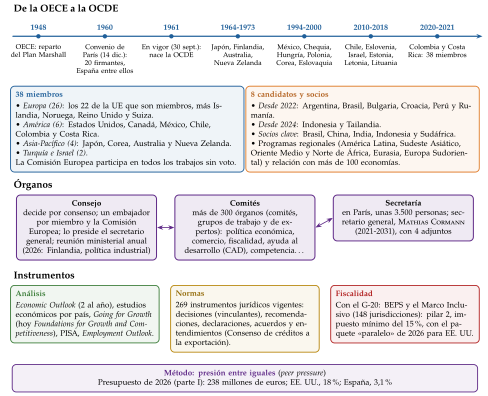
Instrumentos jurídicos: desde 1961 ha adoptado unos 500, de los que 269 siguen en vigor. Son de 5 tipos, de más a menos obligatorios:
las decisiones, vinculantes para los miembros que no se abstienen al adoptarlas, como los Códigos de Liberalización de los Movimientos de Capital y de las Operaciones Invisibles Corrientes;
las recomendaciones, no vinculantes, pero con gran peso político, como la de inteligencia artificial (2019, revisada en 2024) o la de tecnologías cuánticas (2026);
las declaraciones, compromisos políticos solemnes, como la que contiene las Líneas Directrices para Empresas Multinacionales (1976, revisadas en 2023);
los acuerdos internacionales, tratados que obligan a quien los ratifica, como el Convenio contra el soborno de funcionarios extranjeros (1997) o la Convención multilateral de asistencia administrativa en materia fiscal;
los entendimientos, pactos de caballeros: obligan por el honor de las partes, no por el derecho.
El Consenso sobre créditos a la exportación con apoyo oficial, el entendimiento más conocido [ver tema 4.A.24]:
se acordó en 1978, en plena competencia entre gobiernos por ofrecer mejores condiciones de financiación a sus exportadores, para que se compitiera por la calidad y el precio de los bienes, no por la financiación pública: un terreno de juego equilibrado (level playing field);
regula los créditos con apoyo oficial a 2 o más años (financiación directa, seguro o garantía y apoyo al tipo de interés), con plazos, tipos y primas mínimos; quedan fuera los productos agrícolas y el material militar;
es un pacto de caballeros, pero en la Unión Europea es obligatorio, porque se incorporó a su derecho por reglamento;
su reto es que una parte creciente de la financiación oficial a la exportación la dan países que no lo han firmado, como China.
El análisis, el trabajo más visible:
el Economic Outlook, con previsiones en junio y en diciembre e informes intermedios; el de septiembre de 2026 prevé un crecimiento mundial del 2,9 % en 2026;
los estudios económicos de cada país, cada 2 años, que discuten los demás miembros en el comité de examen económico y del desarrollo: es la presión entre iguales en estado puro;
Going for Growth (2005-2023), con las reformas prioritarias de cada miembro, al que ha sucedido en 2026 Foundations for Growth and Competitiveness: coordinación de las políticas de oferta;
el informe PISA, sobre las competencias de los alumnos de 15 años, y el Employment Outlook, sobre el empleo.
La fiscalidad internacional, donde más ha coordinado en los últimos años, con el G-20 [ver tema 4.B.18]:
el proyecto contra la erosión de bases y el traslado de beneficios (BEPS, 2013-2015) y su Marco Inclusivo, que reúne a 148 jurisdicciones en pie de igualdad;
el acuerdo de 2 pilares de octubre de 2021, respaldado por los líderes del G-20 en Roma: el pilar 1 reparte parte de los beneficios de las mayores multinacionales hacia los países donde venden, pero su convenio multilateral sigue sin abrirse a la firma; el pilar 2 fija un impuesto mínimo efectivo del 15 % para los grupos con ingresos de al menos 750 millones de euros;
en enero de 2026, el Marco Inclusivo acordó un paquete «paralelo» (side-by-side) que, tras la declaración del G-7 de junio de 2025, exime a los grupos con matriz en Estados Unidos de las reglas principales del pilar 2 a cambio de reconocer su impuesto mínimo propio. Es un ejemplo de coordinación que se adapta para no perder al miembro más grande.
Valoración: un foro influyente y sin poder de imponer.
Su fuerza está en el análisis y en las normas: muchas reformas de los países europeos tras 2010 siguieron las recomendaciones de sus estudios, y el acuerdo fiscal muestra que puede fijar reglas mundiales.
Coordina sobre todo con normas y presión entre iguales, no con acuerdos de demanda.
Sus retos son abrirse más allá del «club de países ricos» sin perder la capacidad de decidir por consenso, que se complica con miembros más distintos; ordenar un número de comités que muchos consideran excesivo, y depender menos de la contribución de su mayor miembro.
II.3. Otros foros
Además del G-20 y la OCDE, hay foros de 3 tipos: los que coordinan entre pocos países (el G-7), los que tienen tratado, recursos o normas (el FMI, el Consejo de Estabilidad Financiera, la OMC, la Unión Europea) y los de diálogo, que no deciden nada pero acercan posturas (el Foro de Davos, la ASEM).
II.3.1. El G-7
Qué es: el foro de las grandes economías avanzadas: Estados Unidos, Japón, Alemania, el Reino Unido, Francia, Italia y Canadá, con la Unión Europea. Como el G-20, es informal y con presidencia anual rotatoria.
Origen: la primera cumbre fue la de Rambouillet, en 1975, con 6 países; Canadá entró en 1976 y la Comunidad Europea participa desde 1977. Rusia lo amplió a G-8 en 1997 y está suspendida desde 2014.
Qué ha coordinado: fue el foro de la coordinación de los 70 y los 80 (Bonn, el Plaza, el Louvre, III) y lo sigue siendo de las economías avanzadas. En diciembre de 2022 creó un Club del Clima, un foro abierto de cooperación sin aranceles, distinto de los clubes de Nordhaus (2015) [ver tema 3.B.31]. En 2026, con la presidencia de Francia, la cumbre de Évian, en junio, se comprometió a un crecimiento «más equilibrado» que corrija los desequilibrios mundiales y a asegurar el suministro de minerales críticos.
II.3.2. El FMI, el Consejo de Estabilidad Financiera y el Banco de Pagos Internacionales
El FMI: el foro con tratado y con recursos.
Vigila a cada país (las consultas del artículo IV) y al sistema en su conjunto: las Perspectivas de la Economía Mundial y el Informe del Sector Exterior, que compara la balanza de cada país con su norma. El último, de julio de 2026, concluye que los saldos excesivos crecieron en 2025, con China y Estados Unidos como principales causas, y que corregirlos a la vez da mejor resultado que hacerlo por separado [ver tema 3.B.22].
Hace el trabajo técnico de la evaluación mutua del G-20.
Desde 2009 hace con el Consejo de Estabilidad Financiera un ejercicio de alerta temprana: no intenta predecir cuándo llegará una crisis, sino identificar los riesgos extremos del sistema y lo que costarían [ver tema 3.B.17].
Fija doctrina común: desde 2012 acepta las medidas sobre los flujos de capital en ciertas condiciones, y en 2022 las admitió también como prevención cuando hay riesgo sistémico por deuda en divisas.
El Consejo de Estabilidad Financiera (Financial Stability Board, FSB): lo creó el G-20 en abril de 2009, como sucesor del Foro de Estabilidad Financiera de 1999, para coordinar a los reguladores y supervisores nacionales y a los organismos que fijan las normas. Reúne a las autoridades de 25 jurisdicciones (los países del G-20 y algunos más, entre ellos España) y a los organismos financieros internacionales; desde enero de 2013 es una asociación de derecho suizo con sede en Basilea, y lo preside Andrew Bailey desde julio de 2025 [ver tema 3.B.27].
El Banco de Pagos Internacionales y el Comité de Basilea: el foro de los bancos centrales y de las normas bancarias [ver tema 3.B.27].
II.3.3. El Foro Económico Mundial (Davos)
Qué es: una fundación privada sin ánimo de lucro, con sede en Cologny (Ginebra), que reúne a gobiernos, empresas y sociedad civil para «mejorar el estado del mundo». No es un organismo de los gobiernos ni decide nada: su papel es poner temas en la agenda y facilitar el diálogo entre lo público y lo privado. Suiza la reconoce desde 2015 como organización internacional.
Origen: la fundó en 1971 el profesor suizo Klaus Schwab como Foro Europeo de Gestión (European Management Forum), con un primer encuentro de directivos europeos en la estación de montaña de Davos para discutir estrategia empresarial. En 1987 tomó su nombre actual, cuando ya reunía a dirigentes políticos de todo el mundo.
Cómo funciona:
se financia con las cuotas de unas 1.000 grandes empresas socias y se gobierna con un Consejo de Fundación;
su reunión anual, en enero en Davos, es la más conocida, y se completa con reuniones regionales y la de los «nuevos campeones», en China, en verano;
publica informes de referencia: el de riesgos globales, el de la brecha de género o el del futuro del empleo, y lanzó en 2017 un Índice de Desarrollo Inclusivo que mide el crecimiento con criterios como el empleo, la pobreza, la deuda pública o la renta de los hogares.
Su actualidad:
Schwab dejó la presidencia en abril de 2025; desde agosto de 2025 copresiden su consejo Larry Fink y André Hoffmann, y desde febrero de 2026 dirige la fundación Alois Zwinggi, al principio de forma interina;
la reunión de enero de 2026, con el lema «Un espíritu de diálogo», reunió a casi 3.000 participantes y a unos 400 dirigentes políticos, un récord;
su Informe de Riesgos Globales de 2026 sitúa la confrontación geoeconómica como el primer riesgo a corto plazo: es el diagnóstico de un mundo en el que cuesta coordinar.
Valoración: fija la agenda (la globalización, la cuarta revolución industrial, el clima, la desigualdad) y permite encuentros que no se darían en otro sitio, pero no tiene legitimidad democrática ni compromisos que cumplir, y se le critica como un foro de las élites. Sube, como mucho, el primer peldaño de la escalera: el intercambio de información.
II.3.4. La Reunión Asia-Europa (ASEM)
Qué es: un proceso informal de diálogo y cooperación entre Europa y Asia, que nació del peso creciente de Asia más allá del comercio.
Origen: la primera cumbre fue en Bangkok, en marzo de 1996, con los 15 Estados de la Unión Europea, la Comisión, 7 países de la ASEAN, China, Japón y Corea.
Miembros: 53 socios, 51 países (30 europeos y 21 asiáticos) y 2 organizaciones, la Unión Europea y la Secretaría de la ASEAN; la última ampliación, con Croacia y Kazajistán, fue en 2014. Reúnen en torno al 60 % de la población mundial, el 65 % de la economía y el 68 % del comercio.
Cómo funciona: por 3 pilares (político, económico y financiero, y social, cultural y educativo), con cumbres de jefes de Estado y de Gobierno cada 2 años, alternando Asia y Europa, reuniones de ministros por materias y foros con empresas, sindicatos y sociedad civil. Su única institución permanente es la Fundación Asia-Europa (ASEF), creada en 1997 en Singapur, que organiza seminarios e intercambios.
Su actualidad: la última cumbre, la decimotercera, se celebró en noviembre de 2021, en formato virtual, con la presidencia de Camboya; desde entonces no ha habido otra. El diálogo político está parado, pero sigue la cooperación sectorial: los ministros de Educación de la ASEM se reúnen en Filipinas en noviembre de 2026.
Valoración: su informalidad es deliberada, para complementar y no duplicar los acuerdos bilaterales y multilaterales (la OMC, las Naciones Unidas, la ASEAN o la Asociación Económica Integral Regional), pero la hace frágil: con las tensiones geopolíticas, ha perdido peso frente a los acuerdos de la Unión Europea con cada país asiático.
II.3.5. La OMC, el Club de París y la Unión Europea
La OMC: la coordinación de la política comercial, con reglas y un órgano que resuelve las diferencias [ver tema 3.B.33].
El Club de París: los acreedores oficiales que negocian juntos la reestructuración de la deuda bilateral, ahora con el Marco Común del G-20 [ver tema 3.B.29].
La Unión Europea: la forma más intensa de coordinación, con reglas fiscales, el Semestre Europeo, el procedimiento de desequilibrios y el Eurogrupo; y, en el euro, una política monetaria única [ver tema 3.B.16] [ver tema 3.B.45].
Otros: la Red Internacional de Competencia, que coordina a las autoridades de competencia, o el Grupo de Acción Financiera Internacional, contra el blanqueo de capitales.
| Foro | Desde | Miembros | Naturaleza | Peldaño de la escalera |
|---|---|---|---|---|
| G-7 | 1975 | 7 países y la UE | Informal | Coordinación puntual (Plaza, Louvre) |
| OCDE | 1961 | 38 países | Tratado, sin recursos | Información y normas (presión entre iguales) |
| G-20 | 1999 | 19 países, la UE y la UA | Informal | Coordinación puntual en las crisis |
| FMI | 1945 | 191 países | Tratado, con recursos | Información (vigilancia) y financiación |
| FSB | 2009 | 25 jurisdicciones | Asociación suiza | Normas financieras |
| OMC | 1995 | 166 miembros | Tratado, con sanciones | Reglas permanentes |
| Davos | 1971 | Fundación privada | Sin poder de decisión | Diálogo e información |
| ASEM | 1996 | 53 socios | Informal | Diálogo |
Fuente: elaboración propia a partir de las webs de cada foro. Datos a 16 de noviembre de 2026.
Valoración de los foros (tabla 3):
han funcionado en las crisis (2008-2009, 2020) y en las normas (Basilea, el acuerdo fiscal de la OCDE);
fuera de las crisis, la coordinación de la demanda se queda en compartir información y vigilarse: los peldaños bajos de la escalera;
y la fragmentación geopolítica, con un G-20 que no consigue reunir a todos sus miembros, reuniones ministeriales sin comunicado y una ASEM sin cumbres, amenaza también esos peldaños.
Recapitulando el apartado: los foros cambian el juego, lo repiten, dan información y vigilan; por eso la coordinación que existe vive en ellos, aunque suba pocos peldaños fuera de las crisis.
III. Aspectos prácticos (2): la cooperación en la historia macroeconómica reciente
Una vez vistos la teoría y los foros, pasamos a la historia: cuándo se ha coordinado, en qué foro y con qué resultado.
Conclusión anticipada:
la coordinación de las políticas de demanda ha sido rara y casi siempre en crisis: Bonn en 1978, el Plaza y el Louvre en los 80, Londres en 2009;
cada episodio se lee como uno de los juegos del apartado anterior, y el mismo año puede jugarse con matrices distintas: los gobiernos no discrepan tanto sobre si cooperar como sobre el signo del desbordamiento;
la coordinación que dura es la de las reglas y las instituciones.
III.1. La línea del tiempo de la coordinación
La línea del tiempo (tabla 4): la coordinación tuvo su cima con el G-7 en los 70 y los 80, cayó en desgracia y volvió con la crisis financiera global, de la mano del G-20.
| Año | Hito | Lectura |
|---|---|---|
| 1944 | Bretton Woods; el plan de Keynes (1943) no prospera | Reglas: paridades fijas pero ajustables; ajuste solo del deudor |
| 1978 | Cumbre de Bonn del G-7 | Locomotora: estímulo de Alemania y Japón |
| 1985 | Acuerdo del Plaza (G-5) | Acuerdo puntual: depreciar el dólar |
| 1986-1987 | Cumbre de Tokio; acuerdo del Louvre (G-6) | Vigilancia con indicadores; estabilizar los tipos de cambio |
| 1999 | G-20 de ministros y gobernadores; Foro de Estabilidad Financiera | Información: dar voz a los emergentes tras la crisis asiática |
| 2008-2009 | Bajada conjunta de tipos de 6 bancos centrales; G-20 de líderes en Washington, Londres y Pittsburgh | Locomotora mundial; nace el Consejo de Estabilidad Financiera |
| 2010 | G-20 de Toronto | Disciplina fiscal |
| 2013 | Declaración del G-7 sobre tipos de cambio | Guerra de divisas: alto el fuego |
| 2020-2021 | Líneas de canje de dólares; suspensión del servicio de la deuda; acuerdo de 2 pilares | Crisis de la pandemia y reglas fiscales comunes |
| 2025 | Cumbre de Johannesburgo sin Estados Unidos | Foros divididos |
Fuente: elaboración propia a partir de J. Frankel (2016), Cumbre de Bonn (1978), Ministros de Finanzas y gobernadores de Francia, Alemania, Japón, Reino Unido y Estados Unidos (1985), Ministros de Finanzas y gobernadores del G-6 (1987), G20 (1999), Reserva Federal (2008), G20 (2009a), G20 (2010), Ministros de Finanzas y gobernadores del G-7 (2013), Board of Governors of the Federal Reserve System (2020), G20 (2020a), G20 (2021) y G20 (2025).
III.2. La política fiscal: de la locomotora a la disciplina
Bonn, 1978: el primer juego de la locomotora.
En la cumbre de julio de 1978, Alemania se comprometió a nuevas medidas de hasta el 1 % de su PNB, Francia a elevar su déficit medio punto del PNB y Japón a crecer 1,5 puntos más; Estados Unidos, a subir el precio interior del petróleo al nivel mundial.
Alemania se arrepintió: con la segunda crisis del petróleo, estimular resultó ser el objetivo equivocado.
Londres, 2009: la locomotora a escala mundial.
El 2 de abril de 2009, el G-20 anunció una expansión fiscal concertada de 5 billones de dólares hasta finales de 2010 y un programa adicional de 1,1 billones, con los recursos del FMI triplicados hasta 750.000 millones [ver tema 3.A.40].
Volvamos a la matriz de la locomotora (tabla 2): es el paso de (No expandir, No expandir), con 1 cada uno, a (Expandir, Expandir), con 5. Que se vieran en todas las cumbres subía el factor de descuento de (8).
Toronto, 2010: el acuerdo duró poco.
Con la crisis griega, la lectura europea fue que el déficit era el problema, y en junio de 2010 el G-20 se comprometió a reducir al menos a la mitad los déficits de las economías avanzadas antes de 2013.
En Estados Unidos, la expansión fiscal también se rechazó cuando los republicanos ganaron la Cámara de Representantes en noviembre de 2010.
Entre países, la combinación de políticas pasó de las 2 expansivas en casi todos (2009) a la consolidación fiscal en todos, con políticas monetarias que divergían: la Reserva Federal seguía comprando bonos y el BCE subió los tipos en 2011 [ver tema 3.A.40].
El juego de la disciplina fiscal:
para Alemania y el norte de Europa, el déficit de un socio es un desbordamiento negativo: sube el tipo de interés común o crea la expectativa de un rescate (riesgo moral);
con los mismos pagos que la locomotora, la estrategia cooperativa es ahora consolidar, y la coordinación son reglas: Maastricht y el Pacto de Estabilidad y Crecimiento, reforzado en 2011 y reformado en 2024 [ver tema 3.B.45];
el mismo año se jugó con 2 matrices distintas: Alemania veía disciplina y Estados Unidos, locomotora. El desacuerdo no era sobre cooperar, sino sobre el signo del desbordamiento. Las tablas de este juego y del siguiente están en el anexo C.
III.3. La política monetaria: la guerra de divisas
Los hechos:
la Reserva Federal hizo 3 rondas de compras de activos, en noviembre de 2008, noviembre de 2010 y septiembre de 2012; el Banco de Japón lanzó la expansión cuantitativa y cualitativa en abril de 2013, y el BCE empezó a comprar deuda pública en marzo de 2015;
en cada caso la moneda se depreció y los socios se quejaron: el ministro brasileño Guido Mantega habló de «guerra de divisas» en septiembre de 2010 y la presidenta Dilma Rousseff, de «tsunami monetario» en 2012 [ver tema 3.B.15].
El juego: otra vez un dilema del prisionero, ahora con contener como estrategia cooperativa y depreciar como dominante. Si todos deprecian, nadie gana competitividad.
El acuerdo: el 12 de febrero de 2013, los ministros y gobernadores del G-7 declararon que sus políticas se orientarían a objetivos internos con instrumentos internos y que no fijarían objetivos de tipo de cambio. Para J. Frankel (2016), es el ejemplo reciente más importante de coordinación monetaria.
Un matiz: con los tipos en su límite inferior, una expansión monetaria tira también de la demanda mundial. El juego se parecía más a una locomotora que a una guerra de divisas, como en los 30, cuando las devaluaciones ayudaron a salir de la depresión.
Y en las crisis, juntos: el 8 de octubre de 2008, 6 bancos centrales bajaron los tipos a la vez, y la Reserva Federal abrió líneas de canje (swaps) de dólares a otros bancos centrales, que amplió en marzo de 2020 [ver tema 3.B.13].
III.4. Los tipos de cambio: del Plaza al Louvre
En el acuerdo del Plaza, el 22 de septiembre de 1985, los ministros y gobernadores del G-5 declararon deseable «una nueva apreciación ordenada» de sus monedas frente al dólar y se ofrecieron a intervenir juntos. El dólar, que ya bajaba, siguió cayendo.
La cumbre de Tokio, en mayo de 1986, creó la vigilancia con indicadores, y en el acuerdo del Louvre, el 22 de febrero de 1987, el G-6 se comprometió a «fomentar la estabilidad de los tipos de cambio en torno a los niveles actuales».
Se leen como una batalla de los sexos [ver tema 3.A.14]: todos querían un dólar más bajo y luego estable, pero discrepaban en el nivel y en quién ajustaba su política. Hay 2 equilibrios, y coordinar es elegir uno.
III.5. ¿Quién ajusta, el deudor o el acreedor?
El país con déficit tiene que ajustar cuando se le acaba la financiación; el que tiene superávit puede no hacerlo nunca.
En Bretton Woods, John Maynard Keynes propuso una Unión de Compensación que cobraba también a los acreedores; ganó el plan de Harry Dexter White [ver tema 3.B.20].
Hoy lo intentan, sin sanciones, el informe anual del sector exterior del FMI, que pide a los países con superávit que impulsen su demanda interna [ver tema 3.B.22], la evaluación mutua del G-20 en su marco de crecimiento (II.1) y, en la Unión Europea, el procedimiento de desequilibrios [ver tema 3.B.45].
Es la coordinación entre países con superávit y con déficit [ver tema 3.B.12]; España vivió el lado deficitario de ese ajuste tras 2008 [ver tema 4.A.21]. Un ejemplo, Alemania, los Países Bajos y Corea, está en el anexo D.
Recapitulando el apartado: se ha coordinado poco y casi siempre en crisis; cada episodio se lee como uno de los juegos de la teoría, y el desacuerdo suele estar en el signo del desbordamiento, no en la voluntad de cooperar. Lo que dura son las reglas y las instituciones.
Conclusión
Recapitulación: En conclusión, la coordinación es necesaria cuando hay efectos desbordamiento, cuyo signo depende del modelo y de cómo se fijan los precios.
Es deseable porque el equilibrio sin coordinar es ineficiente, como muestra el diagrama de Hamada.
Es difícil: la solución cooperativa no es un equilibrio, la repetición la sostiene solo con gobiernos pacientes y los obstáculos económicos y políticos la frenan.
Por eso se ha coordinado sobre todo en las crisis y con reglas, y los foros suben la escalera de la cooperación peldaño a peldaño.
Relevancia:
Los desequilibrios exteriores crecen, las tensiones comerciales y geopolíticas dividen los foros y la Reserva Federal sigue moviendo el ciclo financiero global: la pregunta de la coordinación es más actual que nunca.
Extensiones:
el ciclo financiero global y el dilema de la política monetaria [ver tema 3.B.15];
la coordinación dentro de una unión monetaria y la gobernanza económica del euro [ver tema 3.B.16] [ver tema 3.B.45];
los clubes climáticos [ver tema 3.B.31] y la fiscalidad internacional con los 2 pilares [ver tema 4.B.18];
la deuda de los países de renta baja y el Marco Común [ver tema 3.B.29], y los derechos especiales de giro del FMI [ver tema 3.B.22].
Opinión:
La coordinación es el «monstruo del lago Ness» del que hablaron Blanchard, Ostry y Ghosh (2013): se habla de ella más de lo que se la ve. Pero aparece cuando más importa, en las crisis (2009, las líneas de canje, 2020), y las reglas que deja duran.
Idea final:
«Cada uno en su casa y Dios en la de todos», decía el refrán. Poner orden en la propia casa es la primera regla, pero cuando la casa de uno ocupa media calle, la de todos también es suya.
A. Anexo: Mundell-Fleming en distintos escenarios
En el cuerpo del tema solo se desarrolla el caso de 2 países grandes con tipo de cambio flexible y movilidad perfecta del capital. Este anexo recorre el resto de escenarios del modelo de Fleming (1962) y Mundell (1963) [ver tema 3.A.32] y de su versión de 2 países, de Mundell (1964), para ver cómo cambian los efectos de la política económica, sobre el propio país y sobre el otro.
El resultado depende de 3 rasgos del país, que son los que van cambiando de una figura a otra:
su tamaño: si es pequeño, el tipo de interés mundial le viene dado; si es grande, lo mueve, y su política llega a los demás también por ese canal;
el régimen cambiario: con tipo fijo, el banco central compra o vende divisas para sostener la paridad y la cantidad de dinero se vuelve endógena (se mueve la LM); con tipo flexible, se mueve el tipo de cambio, que desplaza la IS (por las exportaciones netas) y, si el capital no es perfectamente móvil, también la BP;
la movilidad del capital: perfecta (la BP es horizontal en el tipo de interés mundial), imperfecta (la BP tiene pendiente positiva: con más renta se importa más, y hace falta un tipo de interés más alto para atraer el capital que lo financie) o nula (la BP es vertical: la balanza de pagos es la balanza comercial y solo se equilibra con un nivel de renta).
Todas las figuras se leen con los mismos 3 pasos, numerados igual en los gráficos:
Paso 1: la política desplaza su curva (el gasto, la IS; el dinero, la LM) y la economía pasa del equilibrio inicial \(A\) a un punto intermedio \(B\), en el que el mercado de bienes y el de dinero están en equilibrio, pero no la balanza de pagos;
Paso 2: se mira dónde queda \(B\) respecto a la BP. Si queda por encima (o a la izquierda), hay superávit: entra más capital del que sale o se exporta más de lo que se importa; si queda por debajo (o a la derecha), hay déficit. El desequilibrio pone en marcha el ajuste: con tipo fijo, las reservas mueven la LM; con tipo flexible, el tipo de cambio mueve la IS y, en su caso, la BP;
Paso 3: el ajuste termina en \(C\), donde se cortan las 3 curvas. Comparar \(C\) con \(A\) dice si la política es eficaz.
Los supuestos son los del cuerpo: precios fijos, expectativas estáticas sobre el tipo de cambio, la condición de Marshall-Lerner y, con tipo fijo, sin esterilización de las variaciones de reservas.
El país pequeño con movilidad perfecta del capital
Es el caso canónico de Mundell (1963): el país no mueve el tipo de interés mundial, \(i^*\), y cualquier diferencia entre el tipo nacional y el mundial provoca entradas o salidas de capital ilimitadas (gráfico 9).
Tipo fijo, política fiscal (panel a):
paso 1: el gasto desplaza la IS a la derecha; en \(B\) el tipo nacional supera al mundial;
paso 2: entra capital y la moneda tiende a apreciarse. Para sostener la paridad, el banco central compra divisas y emite dinero: la LM se desplaza a la derecha hasta que el tipo vuelve a \(i^*\);
paso 3: en \(C\) la renta sube todo lo que da el multiplicador, sin expulsión de la inversión: la política fiscal es plenamente eficaz.
Tipo fijo, política monetaria (panel b):
paso 1: el dinero desplaza la LM a la derecha; en \(B\) el tipo nacional es inferior al mundial;
paso 2: sale capital y la moneda tiende a depreciarse. El banco central vende divisas y retira dinero: la LM vuelve a su posición inicial;
paso 3: \(C=A\). La política monetaria es ineficaz: solo cambia la composición del balance del banco central (menos reservas, más activos internos).
Tipo flexible, política fiscal (panel c):
paso 1: como en el panel a, la IS se desplaza a la derecha y en \(B\) el tipo nacional supera al mundial;
paso 2: entra capital y, como nadie defiende la paridad, la moneda se aprecia. Bajan las exportaciones netas y la IS vuelve a la izquierda;
paso 3: la IS vuelve hasta su posición inicial, porque la LM no se ha movido y solo corta a la BP en \(A\): \(C=A\). El gasto público expulsa exportaciones netas en la misma cuantía (expulsión exterior): la política fiscal es ineficaz.
Tipo flexible, política monetaria (panel d):
paso 1: la LM se desplaza a la derecha y en \(B\) el tipo nacional es inferior al mundial;
paso 2: sale capital y la moneda se deprecia. Suben las exportaciones netas y la IS se desplaza a la derecha;
paso 3: la IS se desplaza hasta cortar a la LM\('\) en \(i^*\), en \(C\). La política monetaria es plenamente eficaz, y actúa solo por el tipo de cambio: es la política de empobrecimiento del vecino.
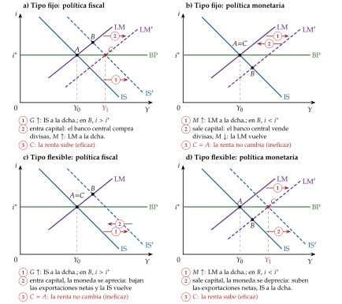
El país pequeño con movilidad imperfecta del capital
Si los activos nacionales y extranjeros no son sustitutos perfectos, el capital responde al diferencial de tipos, pero no de forma ilimitada, y la BP tiene pendiente positiva. Los resultados son intermedios entre los del caso anterior y los de una economía sin movilidad, y dependen de si la BP es más plana o más inclinada que la LM. El gráfico 10 dibuja el caso de una BP más plana que la LM, el de una movilidad alta.
Tipo fijo, política fiscal (panel a):
paso 1: la IS se desplaza a la derecha y \(B\) queda por encima de la BP: la subida del tipo atrae más capital del que se gasta en las importaciones adicionales, y hay superávit;
paso 2: el banco central compra divisas para sostener la paridad, el dinero aumenta y la LM se desplaza a la derecha hasta cortar a la IS\('\) sobre la BP;
paso 3: en \(C\) la renta sube, aunque menos que con movilidad perfecta, porque el tipo de interés queda algo más alto: la política fiscal es eficaz.
Tipo fijo, política monetaria (panel b):
paso 1: la LM se desplaza a la derecha y \(B\) queda por debajo de la BP: sale capital y suben las importaciones, y hay déficit;
paso 2: el banco central vende divisas, el dinero disminuye y la LM vuelve a su sitio;
paso 3: \(C=A\). Con tipo fijo, la política monetaria es ineficaz sea cual sea la movilidad del capital; con movilidad imperfecta solo tarda más.
Tipo flexible, política fiscal (panel c):
paso 1: la IS se desplaza a la derecha y \(B\) queda por encima de la BP: superávit;
paso 2: la moneda se aprecia. Bajan las exportaciones netas, de modo que la IS vuelve en parte a la izquierda, y la BP se desplaza hacia arriba, porque con la moneda más apreciada hace falta un tipo de interés más alto para cada nivel de renta;
paso 3: en \(C\) la renta sube algo: la política fiscal tiene una eficacia parcial, mayor cuanto menor es la movilidad del capital.
Tipo flexible, política monetaria (panel d):
paso 1: la LM se desplaza a la derecha y \(B\) queda por debajo de la BP: déficit;
paso 2: la moneda se deprecia. Suben las exportaciones netas y la IS se desplaza a la derecha; la BP se desplaza hacia abajo;
paso 3: en \(C\) la renta sube mucho: la política monetaria es muy eficaz.
Si la BP fuera más inclinada que la LM (movilidad baja), cambia el signo del paso 2 en la política fiscal: en \(B\) la balanza tendría déficit, porque pesan más las importaciones que la entrada de capital. Con tipo fijo, la LM se desplazaría a la izquierda y la política fiscal perdería eficacia; con tipo flexible, la moneda se depreciaría, la IS se desplazaría todavía más a la derecha y la política fiscal ganaría eficacia.
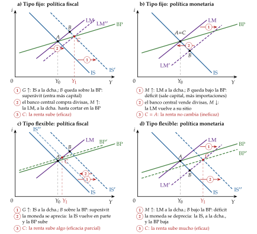
El país sin movilidad del capital
Es el extremo opuesto, el de una economía con controles de capital estrictos, como las de los primeros años de Bretton Woods: la balanza de pagos es la balanza comercial, que solo depende de la renta (por las importaciones) y del tipo de cambio. La BP es vertical en el nivel de renta que equilibra el comercio, y el tipo de interés no la mueve (gráfico 11).
Tipo fijo, política fiscal (panel a):
paso 1: la IS se desplaza a la derecha; en \(B\) la renta es mayor que la que equilibra el comercio, se importa más y hay déficit;
paso 2: el banco central vende divisas para sostener la paridad, el dinero disminuye y la LM se desplaza a la izquierda hasta cortar a la IS\('\) sobre la BP;
paso 3: en \(C\) la renta es la inicial y el tipo de interés, más alto: la expansión fiscal solo sustituye inversión por gasto público. Es ineficaz.
Tipo fijo, política monetaria (panel b): la LM se desplaza a la derecha (paso 1), el déficit comercial hace perder reservas y la LM vuelve (paso 2), y \(C=A\) (paso 3). Es ineficaz.
Tipo flexible, política fiscal (panel c):
paso 1: la IS se desplaza a la derecha y en \(B\) hay déficit comercial;
paso 2: la moneda se deprecia. Suben las exportaciones netas: la IS se desplaza todavía más a la derecha y la BP también, porque con la moneda más depreciada el comercio se equilibra con una renta mayor;
paso 3: en \(C\) la renta sube más que en una economía cerrada: la política fiscal es eficaz. A diferencia de lo que ocurre con movilidad perfecta, aquí no entra capital que aprecie la moneda.
Tipo flexible, política monetaria (panel d): la LM se desplaza a la derecha (paso 1), la depreciación desplaza a la derecha la IS y la BP (paso 2), y en \(C\) la renta sube (paso 3). Es eficaz.
Con tipo flexible, el tipo de cambio equilibra siempre el comercio, y las 2 políticas actúan como en una economía cerrada, reforzadas por la depreciación; con tipo fijo, ninguna es eficaz, porque la renta está atada al equilibrio comercial.
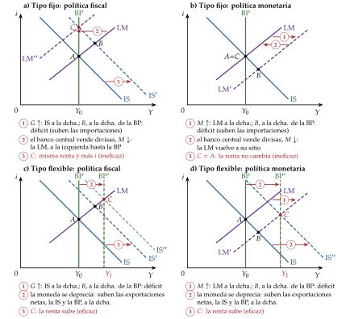
El tamaño del país
El país pequeño y la economía cerrada son los 2 extremos de una misma escala; el país grande del cuerpo del tema está entre los 2. El gráfico 12 compara el mismo impulso en A, con tipo flexible y movilidad perfecta, según el tamaño de A.
La expansión monetaria pierde eficacia al crecer el país (fila superior):
país pequeño (panel a): la LM se desplaza a la derecha (paso 1) y, como \(i^*\) no se mueve, toda la expansión sale por la depreciación, que desplaza la IS hasta el tipo mundial (paso 2). La renta sube mucho;
país grande (panel b): la LM se desplaza igual (paso 1), pero ahora el tipo mundial baja (paso 3), porque A pesa en el mercado mundial de capitales; hay menos salida de capital, menos depreciación y la IS se desplaza menos (paso 2). La renta sube menos;
economía cerrada (panel c): no hay tipo de cambio que se ajuste; solo baja el tipo de interés a lo largo de la IS. La renta sube lo mínimo.
La expansión fiscal gana eficacia al crecer el país (fila inferior):
país pequeño (panel d): la IS se desplaza a la derecha (paso 1), pero la apreciación la devuelve a su sitio (paso 2). La renta no cambia;
país grande (panel e): la IS se desplaza (paso 1) y el tipo mundial sube (paso 3), porque A arrastra al mundo; la apreciación es menor y la IS solo vuelve en parte (paso 2). La renta sube;
economía cerrada (panel f): no hay apreciación; solo sube el tipo de interés a lo largo de la LM. La renta sube lo máximo.
Es lo que dicen las extensiones del cuerpo del tema sobre el tamaño de A: cuanto más pequeño es A, más se parece al país de Mundell (1963); cuanto más grande, más a una economía cerrada.
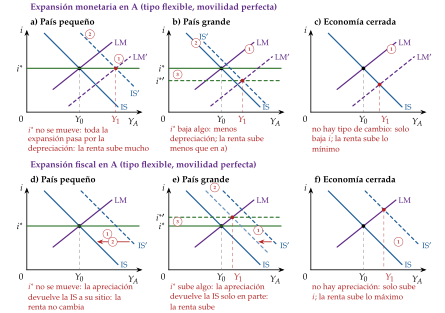
Dos países grandes con tipo de cambio fijo
Con tipo fijo y movilidad perfecta, los 2 países comparten el tipo de interés y, en la práctica, un solo mercado de dinero: lo que pierde de reservas uno lo gana el otro. Por eso la política de cada uno se reparte entre los 2 (gráficos 13 y 14).
Una expansión monetaria en A (gráfico 13):
paso 1: el dinero de A aumenta y su LM se desplaza a la derecha;
paso 2: el tipo de A baja, sale capital hacia B y, para sostener la paridad, el banco central de A vende divisas: su dinero disminuye y la LM vuelve en parte;
paso 3: el dinero del mundo ha aumentado, y el tipo de interés mundial baja;
paso 4: el banco central de B compra las divisas que entran, su dinero aumenta y su LM se desplaza a la derecha;
paso 5: las 2 rentas suben (por igual si los 2 países son simétricos). La expansión de A es una locomotora, no un empobrecimiento del vecino, porque con tipo fijo no hay depreciación que robe demanda a B. El aumento de la renta de cada país desplaza además un poco a la derecha la IS del otro, por sus importaciones, lo que refuerza el resultado.
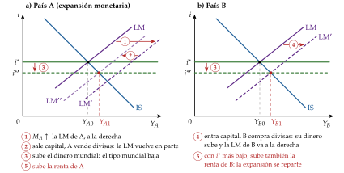
Fuente: elaboración propia a partir de Mundell (1964).
Una expansión fiscal en A (gráfico 14):
paso 1: el gasto desplaza la IS de A a la derecha;
paso 2: el tipo de A sube, entra capital y su banco central compra divisas para sostener la paridad: el dinero de A aumenta y su LM se desplaza a la derecha;
paso 3: el tipo de interés mundial sube, porque A es grande;
paso 4: B pierde las reservas que gana A, su dinero disminuye y su LM se desplaza a la izquierda; a la vez, A le compra más y la IS de B se desplaza algo a la derecha;
paso 5: la renta de A sube; la de B depende de qué pese más, la mayor demanda de A o el tipo de interés más alto. En el gráfico domina el tipo de interés y la renta de B baja; si dominara la demanda, subiría. El efecto sobre el vecino es ambiguo.
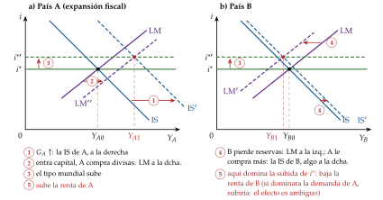
Fuente: elaboración propia a partir de Mundell (1964).
Resumen de los escenarios
La tabla 5 reúne los efectos de las expansiones fiscal y monetaria sobre la renta del país que las aplica y sobre la del otro país en todos los escenarios del anexo y del cuerpo.
Hay 2 regularidades que conviene retener:
con movilidad del capital, la política eficaz es la que no lucha contra el régimen cambiario: la fiscal con tipo fijo y la monetaria con tipo flexible;
el signo del efecto sobre el otro país depende de la política y del régimen: con tipo flexible, la expansión monetaria empobrece al vecino y la fiscal tira de él; con tipo fijo, la monetaria tira de él y la fiscal tiene un efecto ambiguo.
| Escenario | Régimen y movilidad | Política | Renta del país | Renta del otro país |
|---|---|---|---|---|
| País pequeño | Fijo, perfecta | Fiscal | Sube (máxima eficacia) | No se nota: el país pequeño no mueve el resto del mundo |
| Monetaria | No cambia | |||
| Flexible, perfecta | Fiscal | No cambia (expulsión) | ||
| Monetaria | Sube (máxima eficacia) | |||
| Fijo, imperfecta | Fiscal | Sube | ||
| Monetaria | No cambia | |||
| Flexible, imperfecta | Fiscal | Sube algo | ||
| Monetaria | Sube mucho | |||
| Fijo, nula | Fiscal | No cambia (sube \(i\)) | ||
| Monetaria | No cambia | |||
| Flexible, nula | Fiscal | Sube (más que si fuera cerrada) | ||
| Monetaria | Sube | |||
| 2 países grandes | Flexible, perfecta | Monetaria | Sube; menos cuanto mayor es el país | Baja (empobrecimiento del vecino) |
| Fiscal | Sube; más cuanto mayor es el país | Sube (locomotora) | ||
| Fijo, perfecta | Monetaria | Sube | Sube (sube el dinero mundial) | |
| Fiscal | Sube | Ambiguo (demanda de A frente a un \(i^*\) más alto) | ||
| Economía cerrada | Sin sector exterior | Las 2 | Sube (como en el IS-LM) | No hay |
Fuente: elaboración propia a partir de Fleming (1962), Mundell (1963) y Mundell (1964). Movilidad imperfecta: BP más plana que la LM.
B. Anexo: Corsetti y Pesenti, la reforma y el dólar
Este anexo sigue el modelo de Corsetti y Pesenti del cuerpo (I.1.2) con 2 escenarios más: una política de oferta, la reforma estructural, y la facturación en dólares. Usa las mismas ecuaciones, (1) a (6), los mismos números de partida (\(O=(3;\,2)\), AS: \(C=\tfrac{2}{3}\ell\)) y el mismo código de colores: en negro, lo inicial; en azul, lo exógeno; en rojo, lo endógeno.
Cómo se mueve la relación de intercambio de B: \(1/\tau_B\) son las unidades de producción de B necesarias para comprar una cesta de consumo de B. Una depreciación de la moneda de A (\(E\uparrow\)) con PCP sube \(P_F\) en la misma proporción: \(E/P_F\) no cambia, pero los bienes de A se abaratan en B y \(\tau_B\) sube. Con LCP, \(P_F\) y \(P^*_H\) están fijos en la moneda del comprador: \(E/P_F\) sube y \(\tau_B\) baja.
Una reforma estructural en A
La reforma reduce el poder de mercado de las empresas de A: sube \(\sigma\) y, con ella, el empleo natural, que crece con \(\sigma\) (5). Los pasos del gráfico 15 son:
(1) La reforma (azul, exógena): la NR de A se desplaza a la derecha, de \(\overline{\ell}=3\) a \(\overline{\ell}'=3{,}6\).
(2) La relación de intercambio de A empeora: A produce más, sus bienes se abaratan y la AS gira hacia abajo, de \(C=\tfrac{2}{3}\ell\) a \(C=0{,}6\,\ell\).
(3) La AD de A sube y A pasa de \(O\) a \(O'=(3{,}6;\,2{,}16)\): trabaja y consume más, aunque el empeoramiento de la relación de intercambio le quita parte de la ganancia.
(4) La relación de intercambio de B mejora: su AS gira hacia arriba, hasta \(C=0{,}75\,\ell\), y su NR no cambia.
(5) Las importaciones de B se abaratan: su AD sube a 2,25 y B pasa de \(O_B\) a \(O_B'=(3;\,2{,}25)\): consume más con el mismo trabajo.
Las reformas de oferta de un país benefician también a sus socios: es un desbordamiento positivo. Y como la distorsión monopolística no la corrige la política monetaria (I.1.2), la reforma es la única que acerca el empleo a su nivel eficiente.
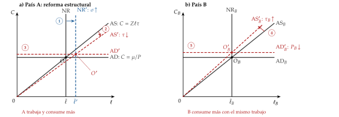
Fuente: elaboración propia a partir de Corsetti y Pesenti (2005). En negro, lo inicial; en azul, lo exógeno; en rojo, lo endógeno.
La facturación en dólares
Todo el comercio se factura en la moneda de uno de los 2 países, el «dólar»: en el ejemplo, la de Estados Unidos (B). A, la zona del euro, no lo emite. Ahora la perturbación de productividad y la respuesta monetaria son de B, el emisor (gráfico 16):
(1) Sube la productividad en B y su AS gira hacia arriba.
(2) B responde subiendo \(\mu_B\): sus precios de importación están fijos en su propia moneda, de modo que no hay inflación importada, la AD sube tanto como \(\mu_B\) y su relación de intercambio no cambia. B llega a \(D_B\), sobre su NR: se comporta como una economía cerrada y queda aislado de lo que pasa fuera.
(3) En A, el no emisor: el dólar se deprecia y lo que A importa, facturado en dólares, se abarata en euros; baja su índice de precios y la AD sube, hasta 2,55. La AS no gira, porque las exportaciones de A también están fijas en dólares. A pasa de \(O\) a \(D=(3{,}825;\,2{,}55)\), sobre su AS y a la derecha de su NR: consume como con PCP (punto \(H\), en gris), pero trabaja más.
El efecto neto sobre A es positivo: por el poder de mercado, en el equilibrio inicial se trabaja menos de lo eficiente y la curva de indiferencia que pasa por \(O\) corta la AS desde arriba (paso 2 del cuerpo). Moverse a lo largo de la AS hacia más empleo y más consumo sube el bienestar, siempre que el movimiento no sea demasiado grande.
Para la coordinación: la política del emisor mueve el bienestar del otro país sin que el emisor lo note. Cooperar sube el bienestar mundial, pero solo tiene que cambiar su política el país que emite el dólar: la contribución es unilateral. Es la versión de 2 países del paradigma de la moneda dominante.
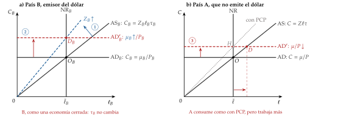
Fuente: elaboración propia a partir de Corsetti y Pesenti (2005). En negro, lo inicial; en azul, lo exógeno; en rojo, lo endógeno.
C. Anexo: los juegos de la coordinación fiscal y monetaria
Los 3 juegos de J. Frankel (2016) tienen los mismos pagos (5, 6, 0 y 1, los del dilema del prisionero de la guerra de precios [ver tema 3.A.14]); solo cambian los rótulos y cuál es la estrategia cooperativa. La locomotora está en la tabla 2.
La disciplina fiscal
Alemania (filas) y el resto de la zona del euro (columnas) eligen entre consolidar y gastar. El déficit de cada uno perjudica al otro, porque sube el tipo de interés común o porque crea la expectativa de un rescate (tabla 6).
Sin coordinar: gastar es una estrategia dominante, y todos acaban con déficits excesivos: la posibilidad del rescate elimina el freno.
Coordinando: reglas que limiten el déficit y la deuda, como las de Maastricht, el Pacto de Estabilidad y Crecimiento de 2011 y su reforma de 2024 [ver tema 3.B.45].
La experiencia: la posición alemana tras 2010 tiene 2 lecturas.
Para unos, Alemania esperaba que gastaran los demás para mantener su superávit comercial: jugaba a la locomotora y se ponía de polizón.
Para otros, jugaba de verdad al juego de la disciplina, que es el equivocado con los tipos en su límite inferior y con la demanda mundial hundida.
En los 2 casos, la diferencia está en cómo se percibe el desbordamiento, no en la voluntad de cooperar.
| Consolidar | Gastar | |
| Consolidar | \((5,5)\) | \((0,\underline{6})\) |
| Gastar | \((\underline{6},0)\) | \((\underline{1},\underline{1})\) |
Fuente: elaboración propia a partir de J. Frankel (2016). Subrayadas, las mejores respuestas; sombreado, el equilibrio de Nash.
La guerra de divisas
La zona del euro (filas) y Estados Unidos (columnas) eligen entre contener su política monetaria y expandirla para depreciar (tabla 7).
Sin coordinar: depreciar es una estrategia dominante; los 2 deprecian, ninguno consigue la depreciación ni el estímulo exterior, y los 2 acaban con más inflación.
Coordinando: abstenerse de las depreciaciones competitivas, como hizo el G-7 en febrero de 2013.
El matiz: con los tipos en el límite inferior, la expansión de cada uno tira de la demanda del otro, y el juego se vuelve una locomotora en la que coordinar es expandir juntos (III.3).
| Contener | Depreciar | |
| Contener | \((5,5)\) | \((0,\underline{6})\) |
| Depreciar | \((\underline{6},0)\) | \((\underline{1},\underline{1})\) |
Fuente: elaboración propia a partir de J. Frankel (2016). Subrayadas, las mejores respuestas; sombreado, el equilibrio de Nash.
El Plaza y el Louvre: una batalla de los sexos
En una batalla de los sexos los 2 jugadores prefieren ponerse de acuerdo a no hacerlo, pero cada uno prefiere un acuerdo distinto: hay 2 equilibrios de Nash y el problema es elegir uno [ver tema 3.A.14].
En 1985 y 1987, los grandes países querían frenar el dólar y luego estabilizarlo, pero discrepaban en el nivel y en quién tenía que ajustar su política. Los acuerdos del Plaza y del Louvre sirvieron para elegir un equilibrio.
D. Anexo: superávit y expansión coordinada
En 2019, con el comercio mundial frenándose, García Andrés (2019) se preguntaba si Alemania, los Países Bajos y Corea iniciaban una expansión fiscal coordinada como la de 2009:
los 3 tenían superávit exterior estructural: llevaban años gastando menos de lo que producían y viviendo de la demanda de otros;
tenían también superávit público y pleno empleo: margen fiscal sin usar, pese a que el FMI les pedía que impulsaran la inversión;
con la demanda exterior en retroceso, ese margen podía servir para sostener el crecimiento propio y el de todos.
Qué ha cambiado (gráfico 17):
en 2025, los 3 siguen con superávit exterior, pero ya tienen déficit público: Alemania, del 2,9 % del PIB; los Países Bajos, del 1,6 %, y Corea, del 2,3 %;
Alemania ha empezado a usar su margen: en marzo de 2025 reformó su freno constitucional a la deuda para excluir parte del gasto en defensa y crear un fondo de inversión de hasta 500.000 millones de euros en 12 años;
el superávit exterior no ha desaparecido: el ajuste simétrico que pedía Keynes sigue pendiente (III.5).
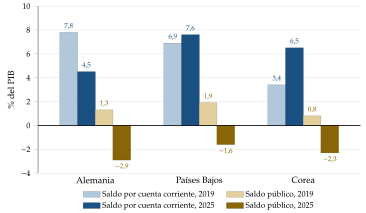
E. Anexo: preguntas de test
Preguntas tipo test del primer ejercicio: simulador de test.
Bibliografía
Fuentes esenciales
Otras referencias
John Nash recibió el Premio Nobel de Economía en 1994, con John Harsanyi y Reinhard Selten, «por su análisis pionero de los equilibrios en la teoría de los juegos no cooperativos».↩︎
Milton Friedman recibió el Premio Nobel de Economía en 1976 «por sus logros en el análisis del consumo, la historia y la teoría monetarias y por demostrar la complejidad de la política de estabilización».↩︎
Robert Mundell recibió el Premio Nobel de Economía en 1999 «por su análisis de la política monetaria y fiscal con distintos regímenes cambiarios y su análisis de las áreas monetarias óptimas».↩︎
El libre comercio, la estabilidad financiera o un clima estable son bienes públicos mundiales: no rivales y difíciles de excluir. Cada país se beneficia de ellos los aporte o no, y tiende a aportar menos de lo que convendría a todos.↩︎
Robert Lucas recibió el Premio Nobel de Economía en 1995 «por haber desarrollado y aplicado la hipótesis de las expectativas racionales, transformando así el análisis macroeconómico y profundizando en la comprensión de la política económica».↩︎
Michael Woodford recibió el Premio Nobel de Economía en 2026, con Robert E. Hall, «por los fundamentos microeconómicos de la estabilización macroeconómica»: es el marco en el que se preguntan Corsetti y Pesenti si conviene coordinar.↩︎
La Comisión Europea usa QUEST, un modelo de esta familia para la zona del euro y sus Estados miembros, y el modelo global multipaís GM.↩︎
Joseph Stiglitz recibió el Premio Nobel de Economía en 2001, con George Akerlof y Michael Spence, «por sus análisis de los mercados con información asimétrica».↩︎
Para B, con la misma lógica, \(\tau_B\equiv\big[\tfrac{P_B}{2}\big(\tfrac{1}{P^*_F}+\tfrac{E}{P_F}\big)\big]^{-1}\), con \(P_B\) el índice de precios de consumo de B en su moneda, \(P^*_F\) el precio en B de lo producido en B y \(P_F\) el precio en A de lo producido en B, en moneda de A.↩︎
Es Koichi Hamada, que lo presentó ya en 1974. No hay que confundirlo con Robert Hamada, el de la beta apalancada de las finanzas (1972).↩︎
William Nordhaus recibió el Premio Nobel de Economía en 2018, con Paul Romer, «por integrar el cambio climático en el análisis macroeconómico a largo plazo».↩︎